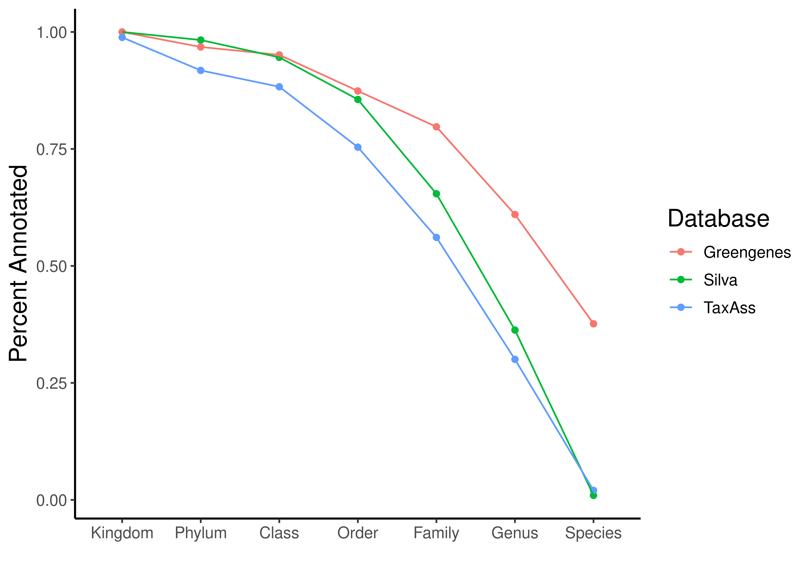

pacman::p_load(tidyverse, phyloseq, dada2, install = FALSE)
# Load in the colors and shapes
source("code/R/plotting_aesthetics.R")
source("code/R/notify_me.R")
# Load in our feature count table
load("data/01b_Prokaryotic_Denoising/seqtab_nc_len.RData")
# And load our meta_data
load("data/01b_Prokaryotic_Denoising/track_df_final.RData")Prokaryotic Taxonomic Assignment
Purpose
The purpose of this document is to take the feature count (otu) table we generated with dada2 and assign taxonomy to our ASVs.
Load packages, source files, and R objects
Assign Taxonomy with TaxAss
mkdir -p data/02b_Prokaryotic_Taxonomic_Classification/TaxAss_analysis
# First, clone Taxass into Taxass folder
# Grab ASVs from 01b_Prokaryotic_Denoising
cp data/01b_Prokaryotic_Denoising/ASVs.fasta data/02b_Prokaryotic_Taxonomic_Classification/TaxAss_analysis/
cd data/02b_Prokaryotic_Taxonomic_Classification/TaxAss_analysis # Move into Taxass data folder
git clone git@github.com:McMahonLab/TaxAss.git # Clone Taxass Github Repo
cd TaxAss # Move into git repo
cd FreshTrain-files # Move to database zip folders
unzip FreshTrain15Jun2020silva138.zip # Unzip newest version
cd FreshTrain15Jun2020silva138 # Move into it
# Move files into TaxAss_analysis directory
mv -f silva_nr_v138_taxass.fasta ../../../
mv -f silva_nr_v138_taxass.taxonomy ../../../
mv -f FreshTrain15Jun2020silva138.fasta ../../../
mv -f FreshTrain15Jun2020silva138.taxonomy ../../../
# Move back to root of TaxAss git repo
cd ../../
# Move into tax-scripts
cd tax-scripts
# Move everyting into TaxAss_analysis directory
mv -f * ../../
# Move to TaxAss_analysis directory
cd ../../
# Remove TaxAss git repo
rm -r -f TaxAss
# Put dependencies in path
export PATH=/programs/mothur:$PATH
export PATH=/programs/ncbi-blast-2.16.0+/bin:$PATH
cat $PATH
# Run taxass with 50 threads
./RunSteps_quickie.sh ASVs FreshTrain15Jun2020silva138 silva_nr_v138_taxass 98 80 80 50
# Make directory for taxonomy exports if it doesn't exist yet
# Move our final result file there
mv -f ASVs.98.80.80.taxonomy ..
mv -f FreshTrain15Jun2020silva138.taxonomy ..
# Remove everything else besides our ASVs.fasta file (so repo looks exactly like it did when we started)
ls | grep -xv "ASVs.fasta" | xargs rm
# Move back to project root
cd ../../../Assign taxonomy using Dada/Silva
Here, we will use the silva database version 138! I will also try doing it with the Greengenes2 database
# This takes awhile
# taxa <- assignTaxonomy(seqtab_nc_len, "/workdir/in_class_data/taxonomy/silva_nr99_v138.1_train_set.fa.gz",
# multithread=30,
# tryRC = TRUE)
#
# notify_me(exists("taxa"), "Finished first pass")
#
# taxa <- addSpecies(taxa, "/workdir/in_class_data/taxonomy/silva_species_assignment_v138.1.fa.gz",
# tryRC = TRUE)
#
# notify_me(exists("taxa"), "Added species")
#
# write_rds(taxa, "data/02b_Prokaryotic_Taxonomic_Classification/taxa.rds")
# taxa_gg <- assignTaxonomy(seqtab_nc_len, "code/greengenes_dada_database/gg2_2024_09_toSpecies_trainset.fa.gz",
# multithread=30,
# tryRC = TRUE)
#
# notify_me(exists("taxa_gg"), "Finished first pass")
#
# write_rds(taxa_gg, "data/02b_Prokaryotic_Taxonomic_Classification/tax_gg.rds")
taxa <- read_rds("data/02b_Prokaryotic_Taxonomic_Classification/taxa.rds")
taxa_gg <- read_rds("data/02b_Prokaryotic_Taxonomic_Classification/tax_gg.rds")
# Inspect the taxonomy
taxa_print <- taxa # Removing sequence rownames for display only
rownames(taxa_print) <- NULL
head(taxa_print, 20) Kingdom Phylum Class Order
[1,] "Bacteria" "Actinobacteriota" "Actinobacteria" "Frankiales"
[2,] "Bacteria" "Proteobacteria" "Alphaproteobacteria" "SAR11 clade"
[3,] "Bacteria" "Actinobacteriota" "Actinobacteria" "Frankiales"
[4,] "Bacteria" "Actinobacteriota" "Actinobacteria" "Frankiales"
[5,] "Bacteria" "Actinobacteriota" "Actinobacteria" "Frankiales"
[6,] "Bacteria" "Proteobacteria" "Gammaproteobacteria" "Burkholderiales"
[7,] "Bacteria" "Actinobacteriota" "Actinobacteria" "Frankiales"
[8,] "Bacteria" "Proteobacteria" "Gammaproteobacteria" "Burkholderiales"
[9,] "Bacteria" "Actinobacteriota" "Acidimicrobiia" "Microtrichales"
[10,] "Bacteria" "Actinobacteriota" "Acidimicrobiia" "Microtrichales"
[11,] "Bacteria" "Proteobacteria" "Gammaproteobacteria" "Burkholderiales"
[12,] "Bacteria" "Proteobacteria" "Gammaproteobacteria" "Burkholderiales"
[13,] "Bacteria" "Cyanobacteria" "Cyanobacteriia" "Chloroplast"
[14,] "Bacteria" "Bacteroidota" "Bacteroidia" "Chitinophagales"
[15,] "Bacteria" "Actinobacteriota" "Actinobacteria" "Frankiales"
[16,] "Bacteria" "Bacteroidota" "Bacteroidia" "Sphingobacteriales"
[17,] "Bacteria" "Proteobacteria" "Gammaproteobacteria" "Burkholderiales"
[18,] "Bacteria" "Bacteroidota" "Kapabacteria" "Kapabacteriales"
[19,] "Bacteria" "Chloroflexi" "SL56 marine group" NA
[20,] "Bacteria" "Actinobacteriota" "Actinobacteria" "Frankiales"
Family Genus Species
[1,] "Sporichthyaceae" "hgcI clade" NA
[2,] "Clade III" NA NA
[3,] "Sporichthyaceae" "hgcI clade" NA
[4,] "Sporichthyaceae" "Candidatus Planktophila" NA
[5,] "Sporichthyaceae" NA NA
[6,] "Methylophilaceae" "Candidatus Methylopumilus" NA
[7,] "Sporichthyaceae" "hgcI clade" NA
[8,] "Burkholderiaceae" "Polynucleobacter" "acidiphobus"
[9,] "Ilumatobacteraceae" "CL500-29 marine group" NA
[10,] "Ilumatobacteraceae" "CL500-29 marine group" NA
[11,] "Comamonadaceae" "Limnohabitans" NA
[12,] "Comamonadaceae" "Rhodoferax" NA
[13,] NA NA NA
[14,] "Chitinophagaceae" "Sediminibacterium" NA
[15,] "Sporichthyaceae" "hgcI clade" NA
[16,] "NS11-12 marine group" NA NA
[17,] "Comamonadaceae" NA NA
[18,] NA NA NA
[19,] NA NA NA
[20,] "Sporichthyaceae" "Candidatus Planktophila" NA Taxonomy Table
##### Prepare tax table
# Add the ASV sequences from the rownames to a column
new_tax_tab <- taxa %>%
as.data.frame() %>%
rownames_to_column(var = "ASVseqs")
head(new_tax_tab) ASVseqs
1 TACATAGGGTGCAAGCGTTGTCCGGAATTATTGGGCGTAAAGAGCTCGTAGGTCGTTTGTTACGTCGGATGTGAAAACCTGAGGCTCAACCTCAGGCCTGCATTCGATACGGGCAAACTAGAGTTTGGTAGGGGAGACTGGAATTCCTGGTGTAGCGGTGGAATGCGCAGATATCAGGAGGAACACCAATGGCGAAGGCAGGTCTCTGGGCCAATACTGACACTGAGGAGCGAAAGTCTGGGGAGCGAACAGGATTAGATACCCTGGTAGTCCAGACCGTAAACGGTGGGCACTAGTTGTGGGAACCTTCCACGGTTTCTGCGACGCAGCTAACGCATTAAGTGCCCCGCCTGGGGAGTACGATCGCAAGATTA
2 TACGAAGGGACCTAGCGTAGTTCGGAATTACTGGGCGTAAAGCGCGCGTAGGCCGTTGAGTTAGTTAATTGTGAAATCCCAAAGCTTAACTTTGGAACTGCAATTAAAACTGCTCGACTAGAGTTTGATAGAGGAAAGCGGAATACATAGTGTAGAGGTGAAATTCGTAGATATTATGTAGAACACCAGTTGCGAAGGCGGCTTTCTGGATCAACACTGACGCTGAGGCGCGAAAGTATGGGTAGCAAAGAGGATTAGATACCCTCGTAGTCCATACCATAAACGATGATTGCTAGATGTTGGAAATTTATTTTCAGTATCGCAGCTAACGCATTAAGCAATCCGCCTGGGGAGTACGACCGCAAGGTTA
3 TACATAGGGTGCAAGCGTTGTCCGGAATTATTGGGCGTAAAGAGCTCGTAGGTCGTTTGTCGCGTCGATTGTGAAAATCTGAGGCTCAACCTCAGACCTGCAGTCGATACGGGCAAACTAGAGTGTGGTAGGGGAGACTGGAATTCCTGGTGTAGCGGTGGAATGCGCAGATATCAGGAGGAACACCAATGGCGAAGGCAGGTCTCTGGGCCATAACTGACACTGAGGAGCGAAAGTGCGGGGAGCGAACAGGATTAGATACCCTGGTAGTCCGCACCGTAAACGGTGGGCACTAGTTGTGGGAACCTTCCACGGTTTCCGCGACGCAGCAAACGCATTAAGTGCCCCGCCTGGGGAGTACGATCGCAAGATTA
4 TACATAGGGTGCAAGCGTTGTCCGGAATTATTGGGCGTAAAGAGCTCGTAGGTGGTTCGTCACGTCGGATGTGAAAATCTGGGGCTTAACCCCAGACCTGCATTCGATACGGGCGAGCTAGAGTGTGGTAGGGGAGACTGGAATTCCTGGTGTAGCGGTGGAATGCGCAGATATCAGGAGGAACACCAATGGCGAAGGCAGGTCTCTGGGCCATTACTGACACTGAGGAGCGAAAGCGTGGGGAGCGAACAGGATTAGATACCCTGGTAGTCCACGCCGTAAACGGTGGGCACTAGTTGTGGGAACCTTCCACGGTTTCTGCGACGCAGCTAACGCATTAAGTGCCCCGCCTGGGGAGTACGATCGCAAGATTA
5 TACATAGGGTGCAAGCGTTGTCCGGAATTATTGGGCGTAAAGAGCTCGTAGGTGGTTCGTCACGTCGGATGTGAAACTCTGGGGCTTAACCCCAGACCTGCATTCGATACGGGCGAGCTTGAGTATGGTAGGGGAGTCTGGAATTCCTGGTGTAGCGGTGGAATGCGCAGATATCAGGAGGAACACCAATGGCGAAGGCAGGACTCTGGGCCATTACTGACACTGAGGAGCGAAAGCGTGGGGAGCGAACAGGATTAGATACCCTGGTAGTCCACGCCGTAAACGGTGGGCACTAGTTGTGGGGACCTTCCACGGTCTCTGCGACGCAGCTAACGCATTAAGTGCCCCGCCTGGGGAGTACGATCGCAAGATTA
6 TACGTAGGGTGCGAGCGTTAATCGGAATTACTGGGCGTAAAGCGTGCGCAGGCGGTTTTGTAAGTCGGATGTGAAATCCCCGGGCTCAACCTGGGAACTGCGTTCGAAACTGCAAGGCTAGAGTGTGTCAGAGGGGGGTAGAATTCCACGTGTAGCAGTGAAATGCGTAGAGATGTGGAGGAATACCAATGGCGAAGGCAGCCCCCTGGGATAACACTGACGCTCATGCACGAAAGCGTGGGGAGCAAACAGGATTAGATACCCTGGTAGTCCACGCCCTAAACGATGTCAACTAGTTGTTGGTAGAGTAAAATCTATGAGTAACGTAGCTAACGCGTGAAGTTGACCGCCTGGGGAGTACGGTCGCAAGATTA
Kingdom Phylum Class Order
1 Bacteria Actinobacteriota Actinobacteria Frankiales
2 Bacteria Proteobacteria Alphaproteobacteria SAR11 clade
3 Bacteria Actinobacteriota Actinobacteria Frankiales
4 Bacteria Actinobacteriota Actinobacteria Frankiales
5 Bacteria Actinobacteriota Actinobacteria Frankiales
6 Bacteria Proteobacteria Gammaproteobacteria Burkholderiales
Family Genus Species
1 Sporichthyaceae hgcI clade <NA>
2 Clade III <NA> <NA>
3 Sporichthyaceae hgcI clade <NA>
4 Sporichthyaceae Candidatus Planktophila <NA>
5 Sporichthyaceae <NA> <NA>
6 Methylophilaceae Candidatus Methylopumilus <NA># intution check
stopifnot(new_tax_tab$ASVseqs == colnames(seqtab_nc_len))
asv_headers <- vector(dim(seqtab_nc_len)[2], mode = "character")
# loop through vector and fill it in with ASV names
for (i in 1:dim(seqtab_nc_len)[2]) {
asv_headers[i] <- paste(">PROK", i, sep = "_")
}
# intitution check
head(asv_headers, 20) [1] ">PROK_1" ">PROK_2" ">PROK_3" ">PROK_4" ">PROK_5" ">PROK_6"
[7] ">PROK_7" ">PROK_8" ">PROK_9" ">PROK_10" ">PROK_11" ">PROK_12"
[13] ">PROK_13" ">PROK_14" ">PROK_15" ">PROK_16" ">PROK_17" ">PROK_18"
[19] ">PROK_19" ">PROK_20"##### Rename ASVs in table then write out our ASV fasta file!
#View(seqtab_nochim)
asv_tab <- t(seqtab_nc_len)
#View(asv_tab)
## Rename our asvs!
row.names(asv_tab) <- sub(">", "", asv_headers)
# Now let's add the ASV names
rownames(new_tax_tab) <- rownames(asv_tab)
#View(new_tax_tab)
### Final prep of tax table. Add new column with ASV names
asv_tax <-
new_tax_tab %>%
# add rownames from count table for phyloseq handoff
mutate(ASV = rownames(asv_tab)) %>%
# Resort the columns with select
dplyr::select(Kingdom, Phylum, Class, Order, Family, Genus, Species, ASV, ASVseqs)
# Intution check
stopifnot(asv_tax$ASV == rownames(asv_tax), rownames(asv_tax) == rownames(asv_tab))##### Prepare tax table
# Add the ASV sequences from the rownames to a column
new_tax_tab_gg <- taxa_gg %>%
as.data.frame() %>%
rownames_to_column(var = "ASVseqs")
head(new_tax_tab_gg) ASVseqs
1 TACATAGGGTGCAAGCGTTGTCCGGAATTATTGGGCGTAAAGAGCTCGTAGGTCGTTTGTTACGTCGGATGTGAAAACCTGAGGCTCAACCTCAGGCCTGCATTCGATACGGGCAAACTAGAGTTTGGTAGGGGAGACTGGAATTCCTGGTGTAGCGGTGGAATGCGCAGATATCAGGAGGAACACCAATGGCGAAGGCAGGTCTCTGGGCCAATACTGACACTGAGGAGCGAAAGTCTGGGGAGCGAACAGGATTAGATACCCTGGTAGTCCAGACCGTAAACGGTGGGCACTAGTTGTGGGAACCTTCCACGGTTTCTGCGACGCAGCTAACGCATTAAGTGCCCCGCCTGGGGAGTACGATCGCAAGATTA
2 TACGAAGGGACCTAGCGTAGTTCGGAATTACTGGGCGTAAAGCGCGCGTAGGCCGTTGAGTTAGTTAATTGTGAAATCCCAAAGCTTAACTTTGGAACTGCAATTAAAACTGCTCGACTAGAGTTTGATAGAGGAAAGCGGAATACATAGTGTAGAGGTGAAATTCGTAGATATTATGTAGAACACCAGTTGCGAAGGCGGCTTTCTGGATCAACACTGACGCTGAGGCGCGAAAGTATGGGTAGCAAAGAGGATTAGATACCCTCGTAGTCCATACCATAAACGATGATTGCTAGATGTTGGAAATTTATTTTCAGTATCGCAGCTAACGCATTAAGCAATCCGCCTGGGGAGTACGACCGCAAGGTTA
3 TACATAGGGTGCAAGCGTTGTCCGGAATTATTGGGCGTAAAGAGCTCGTAGGTCGTTTGTCGCGTCGATTGTGAAAATCTGAGGCTCAACCTCAGACCTGCAGTCGATACGGGCAAACTAGAGTGTGGTAGGGGAGACTGGAATTCCTGGTGTAGCGGTGGAATGCGCAGATATCAGGAGGAACACCAATGGCGAAGGCAGGTCTCTGGGCCATAACTGACACTGAGGAGCGAAAGTGCGGGGAGCGAACAGGATTAGATACCCTGGTAGTCCGCACCGTAAACGGTGGGCACTAGTTGTGGGAACCTTCCACGGTTTCCGCGACGCAGCAAACGCATTAAGTGCCCCGCCTGGGGAGTACGATCGCAAGATTA
4 TACATAGGGTGCAAGCGTTGTCCGGAATTATTGGGCGTAAAGAGCTCGTAGGTGGTTCGTCACGTCGGATGTGAAAATCTGGGGCTTAACCCCAGACCTGCATTCGATACGGGCGAGCTAGAGTGTGGTAGGGGAGACTGGAATTCCTGGTGTAGCGGTGGAATGCGCAGATATCAGGAGGAACACCAATGGCGAAGGCAGGTCTCTGGGCCATTACTGACACTGAGGAGCGAAAGCGTGGGGAGCGAACAGGATTAGATACCCTGGTAGTCCACGCCGTAAACGGTGGGCACTAGTTGTGGGAACCTTCCACGGTTTCTGCGACGCAGCTAACGCATTAAGTGCCCCGCCTGGGGAGTACGATCGCAAGATTA
5 TACATAGGGTGCAAGCGTTGTCCGGAATTATTGGGCGTAAAGAGCTCGTAGGTGGTTCGTCACGTCGGATGTGAAACTCTGGGGCTTAACCCCAGACCTGCATTCGATACGGGCGAGCTTGAGTATGGTAGGGGAGTCTGGAATTCCTGGTGTAGCGGTGGAATGCGCAGATATCAGGAGGAACACCAATGGCGAAGGCAGGACTCTGGGCCATTACTGACACTGAGGAGCGAAAGCGTGGGGAGCGAACAGGATTAGATACCCTGGTAGTCCACGCCGTAAACGGTGGGCACTAGTTGTGGGGACCTTCCACGGTCTCTGCGACGCAGCTAACGCATTAAGTGCCCCGCCTGGGGAGTACGATCGCAAGATTA
6 TACGTAGGGTGCGAGCGTTAATCGGAATTACTGGGCGTAAAGCGTGCGCAGGCGGTTTTGTAAGTCGGATGTGAAATCCCCGGGCTCAACCTGGGAACTGCGTTCGAAACTGCAAGGCTAGAGTGTGTCAGAGGGGGGTAGAATTCCACGTGTAGCAGTGAAATGCGTAGAGATGTGGAGGAATACCAATGGCGAAGGCAGCCCCCTGGGATAACACTGACGCTCATGCACGAAAGCGTGGGGAGCAAACAGGATTAGATACCCTGGTAGTCCACGCCCTAAACGATGTCAACTAGTTGTTGGTAGAGTAAAATCTATGAGTAACGTAGCTAACGCGTGAAGTTGACCGCCTGGGGAGTACGGTCGCAAGATTA
Kingdom Phylum Class Order
1 d__Bacteria p__Actinomycetota c__Actinomycetes o__Nanopelagicales
2 d__Bacteria p__Pseudomonadota c__Alphaproteobacteria o__Pelagibacterales
3 d__Bacteria p__Actinomycetota c__Actinomycetes o__Nanopelagicales
4 d__Bacteria p__Actinomycetota c__Actinomycetes o__Nanopelagicales
5 d__Bacteria p__Actinomycetota c__Actinomycetes o__Nanopelagicales
6 d__Bacteria p__Pseudomonadota c__Gammaproteobacteria o__Burkholderiales
Family Genus Species
1 f__Nanopelagicaceae g__Nanopelagicus s__limnes
2 f__Pelagibacteraceae g__Fonsibacter s__ubiquis
3 f__Nanopelagicaceae g__Nanopelagicus <NA>
4 f__Nanopelagicaceae g__Planktophila s__sp001438925
5 f__Nanopelagicaceae g__Planktophila s__sp001438925
6 f__Methylophilaceae g__Methylopumilus_A_558053 s__planktonicus### Final prep of tax table. Add new column with ASV names
asv_tax_gg <-
new_tax_tab_gg %>%
# add rownames from count table for phyloseq handoff
mutate(ASV = rownames(asv_tab)) %>%
# Resort the columns with select
dplyr::select(Kingdom, Phylum, Class, Order, Family, Genus, Species, ASV, ASVseqs)
# Intution check
stopifnot(asv_tax$ASV == rownames(asv_tax), rownames(asv_tax) == rownames(asv_tab))taxass_taxa <- read_csv("data/02b_Prokaryotic_Taxonomic_Classification/ASVs.98.80.80.taxonomy") %>%
mutate(across(everything(), ~ifelse(str_detect(.x, "unclassified."), NA, .x)), # Convert unclassified to NAs
across(everything(), ~str_remove_all(.x, "\\(\\d+\\)"))) %>% # Remove the boostrap values after names
rename_with(.cols = everything(), ~paste0(.x, "_taxass")) # Change column names
cat("Using newest silva, we failed to classify",sum(is.na(asv_tax)), "slots")Using newest silva, we failed to classify 39640 slotscat("Using greengenes, we failed to classify",sum(is.na(asv_tax_gg)), "slots")Using greengenes, we failed to classify 25779 slotscat("Using taxass, we failed to classify",sum(is.na(taxass_taxa)), "slots")Using taxass, we failed to classify 46642 slots# Here, we figure out which ASVs were assigned from within Taxass
taxass_lineages <- read_tsv("data/02b_Prokaryotic_Taxonomic_Classification/FreshTrain15Jun2020silva138.taxonomy", col_names = FALSE) %>% # Read in the tax file from the TaxAss custom database
separate(X2, sep = ";", into = c("kingdom_taxass","phylum_taxass","class_taxass","order_taxass","lineage_taxass","clade_taxass","tribe_taxass","x")) %>% #Do some name cleaning
mutate(across(everything(), ~ifelse(str_detect(.x, "unnamed."), NA, .x))) %>% # Instead of unclassified, convert to NA (to match our later output)
inner_join(taxass_taxa) %>% # Innerjoin with our taxonomy file - only ASVs that were classified with the Taxass custom database (assumed to be well curated) stay
pull(seqID_taxass) # Find those ASV ids.
taxa_joined <- inner_join(asv_tax, taxass_taxa, by = c("ASV" = "seqID_taxass")) %>%
mutate(from_taxass = ASV %in% taxass_lineages)silva_nas <- asv_tax %>%
summarize(across(Kingdom:Species, \(x)sum(!is.na(x))/n()))
gg_nas <- asv_tax_gg %>%
summarize(across(Kingdom:Species, \(x)sum(!is.na(x))/n()))
taxass_nas <- taxass_taxa %>%
summarize(across(kingdom_taxass:tribe_taxass, \(x)sum(!is.na(x))/n()))
colnames(taxass_nas) <- colnames(gg_nas)
rbind(silva_nas, gg_nas, taxass_nas) %>%
mutate(Database = c("Silva", "Greengenes", "TaxAss")) %>%
pivot_longer(Kingdom:Species, names_to = "Level", values_to = "NAs") %>%
mutate(Level = factor(Level, levels = colnames(gg_nas))) %>%
ggplot(aes(x = Level, y = NAs, color = Database, group = Database)) +
geom_point() +
geom_line() +
labs(x = "", y = "Percent Annotated")
Wow…Greengenes has so much coverage. We’re going to use Greengenes.
# taxa_decided <- taxa_joined %>%
# transmute(ASV = ASV,
# Kingdom = ifelse(from_taxass, kingdom_taxass, Kingdom),
# Phylum = ifelse(from_taxass, phylum_taxass, Phylum),
# Class = ifelse(from_taxass, class_taxass, Class),
# Order = ifelse(from_taxass, order_taxass, Order),
# Family = ifelse(from_taxass, lineage_taxass, Family),
# Genus = ifelse(from_taxass, clade_taxass, Genus),
# Species = ifelse(from_taxass, tribe_taxass, Species),
# ASVseqs = ASVseqs)
#
# cat("Prioritizing TaxAss and then the newest silva, we failed to classify",sum(is.na(taxa_decided)), "slots")
#
# rownames(taxa_decided) <- taxa_decided$ASV
#
# head(taxa_decided, 20)
taxa_decided <- asv_tax_gg %>%
select(Kingdom:Species, ASV, ASVseqs)
rownames(taxa_decided) <- taxa_decided$ASV
head(taxa_decided, 20) Kingdom Phylum Class
PROK_1 d__Bacteria p__Actinomycetota c__Actinomycetes
PROK_2 d__Bacteria p__Pseudomonadota c__Alphaproteobacteria
PROK_3 d__Bacteria p__Actinomycetota c__Actinomycetes
PROK_4 d__Bacteria p__Actinomycetota c__Actinomycetes
PROK_5 d__Bacteria p__Actinomycetota c__Actinomycetes
PROK_6 d__Bacteria p__Pseudomonadota c__Gammaproteobacteria
PROK_7 d__Bacteria p__Actinomycetota c__Actinomycetes
PROK_8 d__Bacteria p__Pseudomonadota c__Gammaproteobacteria
PROK_9 d__Bacteria p__Actinomycetota c__Acidimicrobiia_401430
PROK_10 d__Bacteria p__Actinomycetota c__Acidimicrobiia_401430
PROK_11 d__Bacteria p__Pseudomonadota c__Gammaproteobacteria
PROK_12 d__Bacteria p__Pseudomonadota c__Gammaproteobacteria
PROK_13 d__Bacteria p__Cyanobacteriota c__Chloroplast
PROK_14 d__Bacteria p__Bacteroidota c__Bacteroidia
PROK_15 d__Bacteria p__Actinomycetota c__Actinomycetes
PROK_16 d__Bacteria p__Bacteroidota c__Bacteroidia
PROK_17 d__Bacteria p__Pseudomonadota c__Gammaproteobacteria
PROK_18 d__Bacteria p__Bacteroidota c__Kapaibacteriia
PROK_19 d__Bacteria p__Chloroflexota c__Limnocylindria
PROK_20 d__Bacteria p__Actinomycetota c__Actinomycetes
Order Family
PROK_1 o__Nanopelagicales f__Nanopelagicaceae
PROK_2 o__Pelagibacterales f__Pelagibacteraceae
PROK_3 o__Nanopelagicales f__Nanopelagicaceae
PROK_4 o__Nanopelagicales f__Nanopelagicaceae
PROK_5 o__Nanopelagicales f__Nanopelagicaceae
PROK_6 o__Burkholderiales f__Methylophilaceae
PROK_7 o__Nanopelagicales f__Nanopelagicaceae
PROK_8 o__Burkholderiales f__Burkholderiaceae_A_595421
PROK_9 o__Acidimicrobiales f__Ilumatobacteraceae
PROK_10 o__Acidimicrobiales f__Ilumatobacteraceae
PROK_11 o__Burkholderiales f__Burkholderiaceae_A_595421
PROK_12 o__Burkholderiales f__Burkholderiaceae_A_595421
PROK_13 <NA> <NA>
PROK_14 o__Chitinophagales f__Chitinophagaceae
PROK_15 <NA> <NA>
PROK_16 o__NS11-12g_966746 f__UBA9320
PROK_17 o__Burkholderiales f__Burkholderiaceae_A_595421
PROK_18 o__Kapaibacteriales f__UBA961
PROK_19 o__Limnocylindrales f__Limnocylindraceae
PROK_20 o__Nanopelagicales f__Nanopelagicaceae
Genus Species ASV
PROK_1 g__Nanopelagicus s__limnes PROK_1
PROK_2 g__Fonsibacter s__ubiquis PROK_2
PROK_3 g__Nanopelagicus <NA> PROK_3
PROK_4 g__Planktophila s__sp001438925 PROK_4
PROK_5 g__Planktophila s__sp001438925 PROK_5
PROK_6 g__Methylopumilus_A_558053 s__planktonicus PROK_6
PROK_7 g__Nanopelagicus s__hibericus PROK_7
PROK_8 g__Polynucleobacter s__acidiphobus PROK_8
PROK_9 g__BACL27 s__sp003569125 PROK_9
PROK_10 g__BACL27 s__sp003569125 PROK_10
PROK_11 g__Limnohabitans_A s__sp001412575 PROK_11
PROK_12 g__Rhodoferax_C s__saidenbachensis PROK_12
PROK_13 <NA> <NA> PROK_13
PROK_14 g__Sediminibacterium <NA> PROK_14
PROK_15 <NA> <NA> PROK_15
PROK_16 <NA> <NA> PROK_16
PROK_17 g__Limnohabitans_A <NA> PROK_17
PROK_18 g__UBA961 s__sp009919265 PROK_18
PROK_19 g__Limnocylindrus s__sp003670475 PROK_19
PROK_20 g__Planktophila s__sp000372185 PROK_20
ASVseqs
PROK_1 TACATAGGGTGCAAGCGTTGTCCGGAATTATTGGGCGTAAAGAGCTCGTAGGTCGTTTGTTACGTCGGATGTGAAAACCTGAGGCTCAACCTCAGGCCTGCATTCGATACGGGCAAACTAGAGTTTGGTAGGGGAGACTGGAATTCCTGGTGTAGCGGTGGAATGCGCAGATATCAGGAGGAACACCAATGGCGAAGGCAGGTCTCTGGGCCAATACTGACACTGAGGAGCGAAAGTCTGGGGAGCGAACAGGATTAGATACCCTGGTAGTCCAGACCGTAAACGGTGGGCACTAGTTGTGGGAACCTTCCACGGTTTCTGCGACGCAGCTAACGCATTAAGTGCCCCGCCTGGGGAGTACGATCGCAAGATTA
PROK_2 TACGAAGGGACCTAGCGTAGTTCGGAATTACTGGGCGTAAAGCGCGCGTAGGCCGTTGAGTTAGTTAATTGTGAAATCCCAAAGCTTAACTTTGGAACTGCAATTAAAACTGCTCGACTAGAGTTTGATAGAGGAAAGCGGAATACATAGTGTAGAGGTGAAATTCGTAGATATTATGTAGAACACCAGTTGCGAAGGCGGCTTTCTGGATCAACACTGACGCTGAGGCGCGAAAGTATGGGTAGCAAAGAGGATTAGATACCCTCGTAGTCCATACCATAAACGATGATTGCTAGATGTTGGAAATTTATTTTCAGTATCGCAGCTAACGCATTAAGCAATCCGCCTGGGGAGTACGACCGCAAGGTTA
PROK_3 TACATAGGGTGCAAGCGTTGTCCGGAATTATTGGGCGTAAAGAGCTCGTAGGTCGTTTGTCGCGTCGATTGTGAAAATCTGAGGCTCAACCTCAGACCTGCAGTCGATACGGGCAAACTAGAGTGTGGTAGGGGAGACTGGAATTCCTGGTGTAGCGGTGGAATGCGCAGATATCAGGAGGAACACCAATGGCGAAGGCAGGTCTCTGGGCCATAACTGACACTGAGGAGCGAAAGTGCGGGGAGCGAACAGGATTAGATACCCTGGTAGTCCGCACCGTAAACGGTGGGCACTAGTTGTGGGAACCTTCCACGGTTTCCGCGACGCAGCAAACGCATTAAGTGCCCCGCCTGGGGAGTACGATCGCAAGATTA
PROK_4 TACATAGGGTGCAAGCGTTGTCCGGAATTATTGGGCGTAAAGAGCTCGTAGGTGGTTCGTCACGTCGGATGTGAAAATCTGGGGCTTAACCCCAGACCTGCATTCGATACGGGCGAGCTAGAGTGTGGTAGGGGAGACTGGAATTCCTGGTGTAGCGGTGGAATGCGCAGATATCAGGAGGAACACCAATGGCGAAGGCAGGTCTCTGGGCCATTACTGACACTGAGGAGCGAAAGCGTGGGGAGCGAACAGGATTAGATACCCTGGTAGTCCACGCCGTAAACGGTGGGCACTAGTTGTGGGAACCTTCCACGGTTTCTGCGACGCAGCTAACGCATTAAGTGCCCCGCCTGGGGAGTACGATCGCAAGATTA
PROK_5 TACATAGGGTGCAAGCGTTGTCCGGAATTATTGGGCGTAAAGAGCTCGTAGGTGGTTCGTCACGTCGGATGTGAAACTCTGGGGCTTAACCCCAGACCTGCATTCGATACGGGCGAGCTTGAGTATGGTAGGGGAGTCTGGAATTCCTGGTGTAGCGGTGGAATGCGCAGATATCAGGAGGAACACCAATGGCGAAGGCAGGACTCTGGGCCATTACTGACACTGAGGAGCGAAAGCGTGGGGAGCGAACAGGATTAGATACCCTGGTAGTCCACGCCGTAAACGGTGGGCACTAGTTGTGGGGACCTTCCACGGTCTCTGCGACGCAGCTAACGCATTAAGTGCCCCGCCTGGGGAGTACGATCGCAAGATTA
PROK_6 TACGTAGGGTGCGAGCGTTAATCGGAATTACTGGGCGTAAAGCGTGCGCAGGCGGTTTTGTAAGTCGGATGTGAAATCCCCGGGCTCAACCTGGGAACTGCGTTCGAAACTGCAAGGCTAGAGTGTGTCAGAGGGGGGTAGAATTCCACGTGTAGCAGTGAAATGCGTAGAGATGTGGAGGAATACCAATGGCGAAGGCAGCCCCCTGGGATAACACTGACGCTCATGCACGAAAGCGTGGGGAGCAAACAGGATTAGATACCCTGGTAGTCCACGCCCTAAACGATGTCAACTAGTTGTTGGTAGAGTAAAATCTATGAGTAACGTAGCTAACGCGTGAAGTTGACCGCCTGGGGAGTACGGTCGCAAGATTA
PROK_7 TACATAGGGTGCAAGCGTTGTCCGGAATTATTGGGCGTAAAGAGCTCGTAGGTCGTTTGCCACGTCGGATGTGAAAACCTGAGGCTCAACCTCAGGCCTGCATTCGATACGAGCAAACTAGAGTTTGGTAGGGGAGACTGGAATTCCTGGTGTAGCGGTGGAATGCGCAGATATCAGGAGGAACACCAACGGCGAAGGCAGGTCTCTGGGCCAATACTGACACTGAGGAGCGAAAGTCTGGGGAGCGAACAGGATTAGATACCCTGGTAGTCCAGACCGTAAACGGTGGGCACTAGTTGTGGGAACCTTCCACGGTTTCTGCGACGCAGCTAACGCATTAAGTGCCCCGCCTGGGGAGTACGATCGCAAGATTA
PROK_8 TACGTAGGGTGCGAGCGTTAATCGGAATTACTGGGCGTAAAGCGTGCGCAGGCGGTTATACAAGACAGGCGTGAAATCCCCGGGCTTAACCTGGGAATGGCGTCTGTGACTGTATAGCTAGAGTGTGTCAGAGGGGGGTGGAATTCCACGTGTAGCAGTGAAATGCGTAGATATGTGGAGGAACACCAATGGCGAAGGCAGCCCCCTGGGATAACACTGACGCTCATGCACGAAAGCGTGGGGAGCAAACAGGATTAGATACCCTGGTAGTCCACGCCCTAAACGATGCTGACTAGTTGTTGGGAATTTACATTCTCAGTAACGTAGCTAACGCGTGAAGTCAGCCGCCTGGGGAGTACGGTCGCAAGATTA
PROK_9 TACATAGGCTTCAAGCGTTGTCCGGATTTATTGGGCGTAAAGAGTTCGTAGGCGGTCGAGTAAGTCGGGTGTGAAAATTCTGGGCTCAACCCAGAAACGCCACCCGATACTGCTTAACTTGAGTTCGATAGGGGAGTGGGGAATTCCTAGTGTAGCGGTGAAATGCGCAGATATTAGGAGGAACACCGGTGGCGAAGGCGCCACTCTGGATCGATACTGACGCTGAGGAACGAAAGCATGGGTAGCAAACAGGATTAGATACCCTGGTAGTCCATGCCGTAAACGGTGGGCACTAGGTGTGGGATTCTATTAACGAATTCCGCGCCGTCGCTAACGCATTAAGTGCCCCGCCTGGGGAGTACGGTCGCAAGACTA
PROK_10 TACATAGGCTTCAAGCGTTGTCCGGATTTATTGGGCGTAAAGAGTTCGTAGGCGGTCGAGTAAGTCGGGTGTGAAAATTCTGGGCTCAACCCAGAGACGCCACCCGATACTGCTTAACTTGAGTTCGATAGGGGAGTGGGGAATTCCTAGTGTAGCGGTGAAATGCGCAGATATTAGGAGGAACACCGGTGGCGAAGGCGCCACTCTGGATCGACACTGACGCTGAGGAACGAAAGCATGGGTAGCAAACAGGATTAGATACCCTGGTAGTCCATGCGGTAAACGGTGGGCACTAGGTGTGGGTTTCTATTAACGAAATCCGCGCCGTCGCTAACGCATTAAGTGCCCCGCCTGGGGAGTACGGTCGCAAGACTA
PROK_11 TACGTAGGGTGCAAGCGTTAATCGGAATTACTGGGCGTAAAGCGTGCGCAGGCGGTTATATAAGTCAGATGTGAAATCCCCGGGCTCAACCTGGGAACTGCATTTGAGACTGTATAGCTAGAGTACGGTAGAGGGGGATGGAATTCCGCGTGTAGCAGTGAAATGCGTAGATATGCGGAGGAACACCGATGGCGAAGGCAATCCCCTGGACCTGTACTGACGCTCATGCACGAAAGCGTGGGGAGCAAACAGGATTAGATACCCTGGTAGTCCACGCCCTAAACGATGTCAACTGGTTGTTGGGTCTTAACTGACTCAGTAACGAAGCTAACGCGTGAAGTTGACCGCCTGGGGAGTACGGCCGCAAGGTTG
PROK_12 TACGTAGGGTGCGAGCGTTAATCGGAATTACTGGGCGTAAAGCGTGCGCAGGCGGTTATATAAGACAGATGTGAAATCCCCGGGCTCAACCTGGGACCTGCATTTGTGACTGTATAGCTAGAGTACGGTAGAGGGGGATGGAATTCCGCGTGTAGCAGTGAAATGCGTAGATATGCGGAGGAACACCGATGGCGAAGGCAATCCCCTGGACCTGTACTGACGCTCATGCACGAAAGCGTGGGGAGCAAACAGGATTAGATACCCTGGTAGTCCACGCCCTAAACGATGTCAACTGGTTGTTGGGTCTTCACTGACTCAGTAACGAAGCTAACGCGTGAAGTTGACCGCCTGGGGAGTACGGCCGCAAGGTTG
PROK_13 TACAGAGGATGCAAGCGTTATCCGGAATCACTGGGCATAAAGCGTCTGTAGGTGGTTTGGTAAGTCTGCTGTTAAAGACTGGGGCTCAACCCCAGAAAAGCAGTGGAAACTGCCAGACTTGAGTGTGGTAGAGGTAGAGGGAATTCCTAGTGTAGCGGTGAAATGCGTAGATATTAGGAAGAACACCAATGGCGAAGGCACTCTACTGGACCATAACTGACACTGAGAGACGACAGCTAGGGGAGCAAATGGGATTAGATACCCCAGTAGTCCTAGCCGTAAACGATGGATACTAGATGTTGCACGTATTAACCCGTGCAGTATCGTAGCTAAGGCGTTAAGTATCCCGCCTGGGAAGTACGCTCGCAAGAGTG
PROK_14 TACGGAGGGTGCAAGCGTTATCCGGATTCACTGGGTTTAAAGGGTGCGTAGGCGGGCAGGTAAGTCAGTGGTGAAATCCTGGAGCTCAACTCCAGAACTGCCATTGATACTATCTGTCTTGAATATTGTGGAGGTAAGCGGAATATGTCATGTAGCGGTGAAATGCTTAGATATGACATAGAACACCCATTGCGAAGGCAGCTTACTACGCATATATTGACGCTGAGGCACGAAAGCGTGGGGATCAAACAGGATTAGATACCCTGGTAGTCCACGCCCTAAACGATGGATACTCGACATACGCGATACACTGTGTGTGTCTGAGCGAAAGCATTAAGTATCCCACCTGGGAAGTACGTTCGCAAGAATG
PROK_15 TACATAGGGTGCAAGCGTTGTCCGGATTTATTGGGCGTAAAGAGTTCGTAGGCGGTTTTTCGCGTCGGATGTGAAAACTCAGGGCTCAACCCTGAGCCTGCATTCGATACGGGAAGACTCGAGGACGGCAGGGGAGACTGGAACTTCTGGTGTAGCGGTGGAATGCGCAGATATCAGAAAGAACACCAATGGCGAAGGCAGGTCTCTGGGCCGATCCTGACGCTGAGGAACGAAAGCGTGGGGAGCAAACAGGATTAGATACCCTGGTAGTCCACGCCGTAAACTATGGACGCTAGGTGTGGGGGACATTCCACGTTCTCTGCGCCGCAGCTAACGCATTAAGCGTCCCGCCTGGGGAGTACGACCGCAAGGTTA
PROK_16 GACGAAGGATCCAAGCGTTGTCCGGATTTACTGGGTTTAAAGGGTGCGTAGGCGGAAAATTAAGTCAGTGGTGAAAGCCCGCAGCTCAACTGTGGAACTGCCATTGAAACTGGTTTTCTTGAATATAGCTGAGGCAGATGGAATATAACATGTAGCGGTGAAATGCTTAGATATGTTATAGAACACCGATTGCGAAGGCAGTCTGCTAAACTATTATTGACGCTGAGGCACGAAAGCGTGGGGAGCGAACAGGATTAGATACCCTGGTAGTCCACGCCCTAAACGTTGATTACTCGCTGTTGGCGATATACTGTCAGTGGCTAAGCGAAAGCATTAAGTAATCCACCTGGGAAGTACGACCGCAAGGTTG
PROK_17 TACGTAGGGTGCGAGCGTTAATCGGAATTACTGGGCGTAAAGCGTGCGCAGGCGGTTATATAAGACAGATGTGAAATCCCCGGGCTCAACCTGGGAACTGCATTTGTGACTGTATAGCTAGAGTGCGGCAGAGGGGGATGGAATTCCGCGTGTAGCAGTGAAATGCGTAGATATGCGGAGGAACACCGATGGCGAAGGCAATCCCCTGGGCCTGCACTGACGCTCATGCACGAAAGCGTGGGGAGCAAACAGGATTAGATACCCTGGTAGTCCACGCCCTAAACGATGTCAACTGGTTGTTGGGTCTTCACTGACTCAGTAACGAAGCTAACGCGTGAAGTTGACCGCCTGGGGAGTACGGCCGCAAGGTTG
PROK_18 TACGTAGGATCCGAGCGTTGTCCGGAGTTACTGGGTGTAAAGGGTGCGTAGGCTGTTCTGTGCGTCAGAGGTGAAATCCACGGGCTTAACTCGTGGGGTGCCTTTGATACGGCAGGGCTTGAGTACGAGAGAGGTGCGTGGAATTCCTGGTGTAGCAGTGAAATGCGTAGATATCAGGAGGAACACCGGTGGCGAAGGCGGCGCACTGGCTCGTAACTGACGCTGAGGCACGAAAGCGTGGGGATCAAACAGGATTAGATACCCTGGTAGTCCACGCCTTAAACGATGCATGCTTGGTGTTGGTCTCGCAAGAGATCAGTGCCGTAGTTAACATGATAAGCATGCCACCTGGGGAGTACGATCGCAAGGTTG
PROK_19 TACGTAGGTGGCAAGCGTTGTCCGGATTTACTGGGCGTAAAGCGCGCGCAGGCGGTGAATGAAGTCGAAAGTGAAAGCCCCGGGCTCAACTCGGGAACTGCTTTCGAAACCAGTTCACTTGAAGGCGGAAGAGGGAAGTGGAATTCCGAGTGTAGTGGTGGAATGCGTAGATATTCGGAAGAACACCAGAGGCGAAGGCGACTTCCTGGTCCGATCTTGACGCTGAGGCGCGAAAGCTAGGGGAGCAAACGGGATTAGATACCCCGGTAGTCCTAGCTGTAAACGATGGATACTAGGTGTTGGAGGTTTTAACCCCTCCGGTGCCGCAGCTAACGCATTAAGTATCCCGCCTGGGGAGTACGGCCGCAAGGCTA
PROK_20 TACATAGGGTGCAAGCGTTGTCCGGAATTATTGGGCGTAAAGAGCTCGTAGGTGGTTTGATACGTCGGGTGTGAAATTCAGGGGCTCAACCCCTGACCTGCATTCGATACGGTCAAGCTAGAGTTTGGTAGGGGAGACTGGAATTCCTGGTGTAGCGGTGGAATGCGCAGATATCAGGAGGAACACCGATGGCGAAGGCAGGTCTCTGGGCCAATACTGACACTGAGGAGCGAAAGCGTGGGGAGCGAACAGGATTAGATACCCTGGTAGTCCACGCCGTAAACGGTGGGCGCTAGTTGTGCGAACCTTCCACGGTTTGTGCGACGCAGCTAACGCATTAAGCGCCCCGCCTGGGGAGTACGATCGCAAGATTA# Write the table
write.table(taxa_decided, "data/02b_Prokaryotic_Taxonomic_Classification/ASV_final_taxonomy.tsv", sep = "\t", quote = FALSE, col.names = NA)
## Handoff to phyloseq
raw_prok_physeq <- phyloseq(otu_table(asv_tab, taxa_are_rows = TRUE),
tax_table(as.matrix(taxa_decided)))
raw_prok_physeqphyloseq-class experiment-level object
otu_table() OTU Table: [ 18109 taxa and 83 samples ]
tax_table() Taxonomy Table: [ 18109 taxa by 9 taxonomic ranks ]Assigning Plastid Taxonomy
# taxa_plastid <- assignTaxonomy(seqtab_nc_len, "code/mcnichol_split_scripts/pr2_database/pr2_version_5.1.0_SSU_dada2.fasta.gz",
# multithread=30,
# tryRC = TRUE,
# taxLevels = c("Domain","Supergroup","Division","Subdivision", "Class","Order","Family","Genus","Species"))
#
#
# write_rds(taxa_plastid, "data/02b_Prokaryotic_Taxonomic_Classification/taxa_plastid.rds")
taxa_plastid <- readRDS("data/02b_Prokaryotic_Taxonomic_Classification/taxa_plastid.rds")
taxa_just_plastid <-
taxa_plastid %>%
data.frame() %>%
filter(str_detect(Domain, "Eukaryota:plas"))
new_tax_tab_plas <- taxa_just_plastid %>%
rownames_to_column(var = "ASVseqs")
head(new_tax_tab_plas) ASVseqs
1 TACAGAGGATGCAAGCGTTATCCGGAATCACTGGGCATAAAGCGTCTGTAGGTGGTTTGGTAAGTCTGCTGTTAAAGACTGGGGCTCAACCCCAGAAAAGCAGTGGAAACTGCCAGACTTGAGTGTGGTAGAGGTAGAGGGAATTCCTAGTGTAGCGGTGAAATGCGTAGATATTAGGAAGAACACCAATGGCGAAGGCACTCTACTGGACCATAACTGACACTGAGAGACGACAGCTAGGGGAGCAAATGGGATTAGATACCCCAGTAGTCCTAGCCGTAAACGATGGATACTAGATGTTGCACGTATTAACCCGTGCAGTATCGTAGCTAAGGCGTTAAGTATCCCGCCTGGGAAGTACGCTCGCAAGAGTG
2 TACAGAGGCCCCAAGCGTTGTTCGGATTTACTGGGCGTAAAGGGTGTGTAGGGGGTCGTGTAAGTTTGACGTGAAATCCCGTTGCTCAACAACGGAACTGCGTCGAATACTGCTCGGCTGGAGGTTCGGAGATGAGGGCGGAATTCTCGGTGTAGCGGTGAAATGCGTAGATATCGAGAGGAACGCCGATGGCGAAAGCAGCCCTCAAGACGAAATCTGACCCTGAAACACGAAGGCCAGGGGAGCAAACGGGATTAGATACCCCGGTAGTCCTGGCAGTAAACGGTGCTCATTAGATGTAGGCGGATTCGACCCCGCCTGTGTCGAACCTAACGGATTAAATGAGCCGCCTGGGAAGTACGGTCGCAAGATTA
3 GACGGAGGATGCAAGTGTTATCCGGAATTACTGGGCGTAAAGCGTCTGTAGGTGGTTTAATAAGTCAACTGTTAAATCTTGAGGCTTAACTTCAAAACAGCAGTCGAAACTATTAGACTAGAGTATAGTAGGGGTAAAGGGAATTTCCAGTGGAGCGGTGAAATGCGTAGATATTGGAAAGAACACCGATGGCGAAAGCACTTTACTGGGCTATTACTAACACTCAGAGACGAAAGCTAGGGTAGCAAATGGGATTAGATACCCCAGTAGTCCTAGCTGTAAACAATGGATACTAGATGTTGAACAGATCGACCTGTGCAGTATTAAAGCTAACGCGTTAAGTATCCCGCCTGGGAAGTATGCTCGCAAGAGTG
4 GACGGAGGATGCAAGTGTTATCCGGAATCACTGGGCGTAAAGCGTCTGTAGGTGGTTTAATAAGTCAACTGTTAAATCTTGAGGCTCAACCTCAAAATCGCAGTCGAAACTATTAGACTAGAGTATAGTAGGGGTAAAGGGAATTTCCAGTGGAGCGGTGAAATGCGTAGAGATTGGAAAGAACACCGATGGCGAAAGCACTTTACTAGGCTATTACTGACACTCAGAGACGAAAGCTAGGGTAGCAAATGGGATTAGATACCCCAGTAGTCCTAGCTGTAAACTATGGATACTAGATGTTGAACAGATCGACCTGTGCAGTATCAAAGCTAACGCGTTAAGTATCCCGCCTGGGAAGTATGCTCGCAAGGGTG
5 TACAGAGGATGCAAGCGTTATCCGGAATCACTGGGCATAAAGCGTCTGTAGGTTGCTTGCCAAGTCTGCTGTTAAAGATCAGGGCCTAACCCTGGGAAAGCAGTGGAAACTAGTAGGCTTGAGTGTGGTAGAGGTAGAGGGAATTCCTGGTGTAGCGGTGAAATGCGTAGATATTAGGAAGAACACCAATGGCGAAAGCACTCTACTGGGCCATAACTGACACTGAGAGACGACAGCTAGGGGAGCAAATGGGATTAGATACCCCAGTAGTCCTAGCCGTAAACGATGGATACTAGGTGTTGCACGTATTAACCCGTGCAGTATCGTAGCTAAGGCGTTAAGTATCCCGCCTGGGAAGTACGCTCGCAAGAGTG
6 GACGGAGGATGCAAGTGTTATCCGGAATCACTGGGCGTAAAGCGTCTGTAGGTGGTTTAATAAGTCAACTGTTAAATCTTGAGGCTCAACTTCAAAATCGCAGTCGAAACTATTAGACTAGAGTATAGTAGAGGTAAAGGGAATTTCCAGTGGAGCGGTGAAATGCGTAGATATTGGAAAGAACACCGATGGCGAAAGCACTTTACTGGGCTATTACTAACACTCAGAGACGAAAGCTAGGGTAGCAAATGGGATTAGATACCCCAGTAGTCCTAGCCGTAAACTATGGATACTAGATGTTGAACAGATCGACCTGTGCAGTATCAAAGCTAACGCGTTAAGTATCCCGCCTGGGAAGTATGCTCGCAAGAGTG
Domain Supergroup Division Subdivision
1 Eukaryota:plas Cryptista:plas Cryptophyta:plas Cryptophyta_X:plas
2 Eukaryota:plas Archaeplastida:plas Chlorophyta:plas Chlorophyta_X:plas
3 Eukaryota:plas TSAR:plas Stramenopiles:plas Gyrista:plas
4 Eukaryota:plas TSAR:plas Stramenopiles:plas Gyrista:plas
5 Eukaryota:plas Cryptista:plas Cryptophyta:plas Cryptophyta_X:plas
6 Eukaryota:plas TSAR:plas Stramenopiles:plas Gyrista:plas
Class Order Family
1 Cryptophyceae:plas Cryptomonadales:plas Cryptomonadales_X:plas
2 Chlorophyta_XX:plas Chlorophyta_XXX:plas Chlorophyta_XXXX:plas
3 Coscinodiscophyceae:plas Aulacoseirales:plas Aulacoseiraceae:plas
4 Bacillariophyceae:plas Rhabdonematales:plas Tabellariaceae:plas
5 Cryptophyceae:plas Cryptomonadales:plas Cryptomonadales_X:plas
6 Mediophyceae:plas Thalassiosirales:plas Thalassiosiraceae:plas
Genus Species
1 Teleaulax:plas Teleaulax_sp.:plas
2 Chlorophyta_XXXXX:plas Chlorophyta_XXXXX_sp.:plas
3 Aulacoseira:plas Aulacoseira_granulata:plas
4 Diatoma:plas Diatoma_tenuis:plas
5 Cryptomonas:plas Cryptomonas_curvata:plas
6 Thalassiosira:plas Thalassiosira_sp.:plasdim(seqtab_nc_len)[1] 83 18109plastid_seqtab_nc_len <- seqtab_nc_len[,new_tax_tab_plas$ASVseqs]
dim(plastid_seqtab_nc_len)[1] 83 599asv_headers_plas <- vector(dim(plastid_seqtab_nc_len)[2], mode = "character")
# loop through vector and fill it in with ASV names
for (i in 1:dim(plastid_seqtab_nc_len)[2]) {
asv_headers_plas[i] <- paste(">PLAS", i, sep = "_")
}
# intitution check
head(asv_headers_plas, 20) [1] ">PLAS_1" ">PLAS_2" ">PLAS_3" ">PLAS_4" ">PLAS_5" ">PLAS_6"
[7] ">PLAS_7" ">PLAS_8" ">PLAS_9" ">PLAS_10" ">PLAS_11" ">PLAS_12"
[13] ">PLAS_13" ">PLAS_14" ">PLAS_15" ">PLAS_16" ">PLAS_17" ">PLAS_18"
[19] ">PLAS_19" ">PLAS_20"##### Rename ASVs in table then write out our ASV fasta file!
asv_tab_plas <- t(plastid_seqtab_nc_len)
#View(asv_tab)
## Rename our asvs!
row.names(asv_tab_plas) <- sub(">", "", asv_headers_plas)
# Now let's add the ASV names
rownames(new_tax_tab_plas) <- rownames(asv_tab_plas)
#View(new_tax_tab)
### Final prep of tax table. Add new column with ASV names
asv_tax_plas <-
new_tax_tab_plas %>%
# add rownames from count table for phyloseq handoff
mutate(ASV = rownames(asv_tab_plas)) %>%
# Resort the columns with select
dplyr::select(Domain:Species, ASV, ASVseqs)
# Intution check
stopifnot(asv_tax_plas$ASV == rownames(asv_tax_plas), rownames(asv_tax_plas) == rownames(asv_tab_plas))
raw_plas_physeq <- phyloseq(otu_table(asv_tab_plas, taxa_are_rows = TRUE),
tax_table(as.matrix(asv_tax_plas)))
raw_plas_physeqphyloseq-class experiment-level object
otu_table() OTU Table: [ 599 taxa and 83 samples ]
tax_table() Taxonomy Table: [ 599 taxa by 11 taxonomic ranks ]Remove plastids from Prokaryotic Phyloseq
raw_prok_physeq %>%
subset_taxa(ASVseqs %in% asv_tax_plas$ASVseqs) %>%
tax_table() %>%
head(40)Taxonomy Table: [40 taxa by 9 taxonomic ranks]:
Kingdom Phylum Class
PROK_13 "d__Bacteria" "p__Cyanobacteriota" "c__Chloroplast"
PROK_45 "d__Bacteria" "p__Verrucomicrobiota" "c__Verrucomicrobiae"
PROK_75 "d__Bacteria" "p__Cyanobacteriota" "c__Cyanobacteriia"
PROK_77 "d__Bacteria" "p__Cyanobacteriota" "c__Cyanobacteriia"
PROK_80 "d__Bacteria" "p__Cyanobacteriota" "c__Chloroplast"
PROK_81 "d__Bacteria" "p__Cyanobacteriota" "c__Cyanobacteriia"
PROK_101 "d__Bacteria" "p__Cyanobacteriota" "c__Chloroplast"
PROK_102 "d__Bacteria" "p__Cyanobacteriota" "c__Cyanobacteriia"
PROK_108 "d__Bacteria" "p__Cyanobacteriota" "c__Cyanobacteriia"
PROK_116 "d__Bacteria" "p__Cyanobacteriota" "c__Chloroplast"
PROK_134 "d__Bacteria" "p__Cyanobacteriota" "c__Cyanobacteriia"
PROK_136 "d__Bacteria" "p__Cyanobacteriota" "c__Cyanobacteriia"
PROK_144 "d__Bacteria" "p__Cyanobacteriota" "c__Chloroplast"
PROK_147 "d__Bacteria" "p__Cyanobacteriota" "c__Cyanobacteriia"
PROK_148 "d__Bacteria" "p__Cyanobacteriota" "c__Chloroplast"
PROK_154 "d__Bacteria" "p__Cyanobacteriota" "c__Chloroplast"
PROK_167 "d__Bacteria" "p__Cyanobacteriota" "c__Chloroplast"
PROK_168 "d__Bacteria" "p__Verrucomicrobiota" "c__Verrucomicrobiae"
PROK_175 "d__Bacteria" "p__Cyanobacteriota" "c__Chloroplast"
PROK_178 "d__Bacteria" "p__Cyanobacteriota" "c__Chloroplast"
PROK_196 "d__Bacteria" "p__Cyanobacteriota" "c__Cyanobacteriia"
PROK_227 "d__Bacteria" "p__Cyanobacteriota" "c__Cyanobacteriia"
PROK_237 "d__Bacteria" "p__Cyanobacteriota" "c__Chloroplast"
PROK_240 "d__Bacteria" "p__Cyanobacteriota" "c__Chloroplast"
PROK_242 "d__Bacteria" "p__Cyanobacteriota" "c__Cyanobacteriia"
PROK_244 "d__Bacteria" "p__Cyanobacteriota" "c__Chloroplast"
PROK_251 "d__Bacteria" "p__Cyanobacteriota" "c__Chloroplast"
PROK_264 "d__Bacteria" "p__Cyanobacteriota" "c__Chloroplast"
PROK_269 "d__Bacteria" "p__Cyanobacteriota" "c__Chloroplast"
PROK_279 "d__Bacteria" "p__Cyanobacteriota" "c__Cyanobacteriia"
PROK_286 "d__Bacteria" "p__Cyanobacteriota" "c__Cyanobacteriia"
PROK_288 "d__Bacteria" "p__Cyanobacteriota" "c__Chloroplast"
PROK_293 "d__Bacteria" "p__Cyanobacteriota" "c__Cyanobacteriia"
PROK_305 "d__Bacteria" "p__Cyanobacteriota" "c__Chloroplast"
PROK_326 "d__Bacteria" "p__Cyanobacteriota" "c__Cyanobacteriia"
PROK_330 "d__Bacteria" "p__Cyanobacteriota" "c__Cyanobacteriia"
PROK_331 "d__Bacteria" "p__Cyanobacteriota" "c__Cyanobacteriia"
PROK_336 "d__Bacteria" "p__Cyanobacteriota" "c__Cyanobacteriia"
PROK_337 "d__Bacteria" "p__Cyanobacteriota" "c__Chloroplast"
PROK_342 "d__Bacteria" "p__Cyanobacteriota" "c__Cyanobacteriia"
Order Family Genus
PROK_13 NA NA NA
PROK_45 "o__Methylacidiphilales" "f__UBA3015" "g__UBA3015"
PROK_75 "o__Cyanobacteriales" "f__Coleofasciculaceae" "g__Caldora"
PROK_77 "o__Cyanobacteriales" "f__Coleofasciculaceae" "g__Caldora"
PROK_80 NA NA NA
PROK_81 "o__Cyanobacteriales" "f__Coleofasciculaceae" "g__Caldora"
PROK_101 NA NA NA
PROK_102 "o__Cyanobacteriales" "f__Coleofasciculaceae" "g__Caldora"
PROK_108 "o__Cyanobacteriales" "f__Coleofasciculaceae" "g__Caldora"
PROK_116 NA NA NA
PROK_134 "o__Cyanobacteriales" "f__Coleofasciculaceae" "g__Caldora"
PROK_136 "o__Cyanobacteriales" "f__Coleofasciculaceae" "g__Caldora"
PROK_144 NA NA NA
PROK_147 "o__Cyanobacteriales" "f__Coleofasciculaceae" "g__Caldora"
PROK_148 NA NA NA
PROK_154 NA NA NA
PROK_167 NA NA NA
PROK_168 "o__Methylacidiphilales" "f__UBA3015" "g__UBA3015"
PROK_175 NA NA NA
PROK_178 NA NA NA
PROK_196 "o__Cyanobacteriales" "f__Coleofasciculaceae" "g__Caldora"
PROK_227 "o__Cyanobacteriales" "f__Coleofasciculaceae" "g__Caldora"
PROK_237 NA NA NA
PROK_240 NA NA NA
PROK_242 "o__Cyanobacteriales" "f__Coleofasciculaceae" "g__Caldora"
PROK_244 NA NA NA
PROK_251 NA NA NA
PROK_264 NA NA NA
PROK_269 NA NA NA
PROK_279 "o__Cyanobacteriales" "f__Coleofasciculaceae" "g__Caldora"
PROK_286 "o__Cyanobacteriales" "f__Coleofasciculaceae" "g__Caldora"
PROK_288 NA NA NA
PROK_293 "o__Cyanobacteriales" "f__Coleofasciculaceae" "g__Caldora"
PROK_305 NA NA NA
PROK_326 "o__Cyanobacteriales" "f__Coleofasciculaceae" "g__Caldora"
PROK_330 "o__Cyanobacteriales" "f__Coleofasciculaceae" "g__Caldora"
PROK_331 "o__Cyanobacteriales" "f__Coleofasciculaceae" "g__Caldora"
PROK_336 "o__Cyanobacteriales" "f__Coleofasciculaceae" "g__Caldora"
PROK_337 NA NA NA
PROK_342 "o__Cyanobacteriales" "f__Coleofasciculaceae" "g__Caldora"
Species ASV
PROK_13 NA "PROK_13"
PROK_45 "s__sp001438005" "PROK_45"
PROK_75 "s__sp010672925" "PROK_75"
PROK_77 "s__sp010672925" "PROK_77"
PROK_80 NA "PROK_80"
PROK_81 "s__sp010672925" "PROK_81"
PROK_101 NA "PROK_101"
PROK_102 "s__sp010672925" "PROK_102"
PROK_108 "s__sp010672925" "PROK_108"
PROK_116 NA "PROK_116"
PROK_134 "s__sp010672925" "PROK_134"
PROK_136 "s__sp010672925" "PROK_136"
PROK_144 NA "PROK_144"
PROK_147 "s__sp010672925" "PROK_147"
PROK_148 NA "PROK_148"
PROK_154 NA "PROK_154"
PROK_167 NA "PROK_167"
PROK_168 "s__sp001438005" "PROK_168"
PROK_175 NA "PROK_175"
PROK_178 NA "PROK_178"
PROK_196 "s__sp010672925" "PROK_196"
PROK_227 "s__sp010672925" "PROK_227"
PROK_237 NA "PROK_237"
PROK_240 NA "PROK_240"
PROK_242 "s__sp010672925" "PROK_242"
PROK_244 NA "PROK_244"
PROK_251 NA "PROK_251"
PROK_264 NA "PROK_264"
PROK_269 NA "PROK_269"
PROK_279 "s__sp010672925" "PROK_279"
PROK_286 "s__sp010672925" "PROK_286"
PROK_288 NA "PROK_288"
PROK_293 "s__sp010672925" "PROK_293"
PROK_305 NA "PROK_305"
PROK_326 "s__sp010672925" "PROK_326"
PROK_330 "s__sp010672925" "PROK_330"
PROK_331 "s__sp010672925" "PROK_331"
PROK_336 "s__sp010672925" "PROK_336"
PROK_337 NA "PROK_337"
PROK_342 "s__sp010672925" "PROK_342"
ASVseqs
PROK_13 "TACAGAGGATGCAAGCGTTATCCGGAATCACTGGGCATAAAGCGTCTGTAGGTGGTTTGGTAAGTCTGCTGTTAAAGACTGGGGCTCAACCCCAGAAAAGCAGTGGAAACTGCCAGACTTGAGTGTGGTAGAGGTAGAGGGAATTCCTAGTGTAGCGGTGAAATGCGTAGATATTAGGAAGAACACCAATGGCGAAGGCACTCTACTGGACCATAACTGACACTGAGAGACGACAGCTAGGGGAGCAAATGGGATTAGATACCCCAGTAGTCCTAGCCGTAAACGATGGATACTAGATGTTGCACGTATTAACCCGTGCAGTATCGTAGCTAAGGCGTTAAGTATCCCGCCTGGGAAGTACGCTCGCAAGAGTG"
PROK_45 "TACAGAGGCCCCAAGCGTTGTTCGGATTTACTGGGCGTAAAGGGTGTGTAGGGGGTCGTGTAAGTTTGACGTGAAATCCCGTTGCTCAACAACGGAACTGCGTCGAATACTGCTCGGCTGGAGGTTCGGAGATGAGGGCGGAATTCTCGGTGTAGCGGTGAAATGCGTAGATATCGAGAGGAACGCCGATGGCGAAAGCAGCCCTCAAGACGAAATCTGACCCTGAAACACGAAGGCCAGGGGAGCAAACGGGATTAGATACCCCGGTAGTCCTGGCAGTAAACGGTGCTCATTAGATGTAGGCGGATTCGACCCCGCCTGTGTCGAACCTAACGGATTAAATGAGCCGCCTGGGAAGTACGGTCGCAAGATTA"
PROK_75 "GACGGAGGATGCAAGTGTTATCCGGAATTACTGGGCGTAAAGCGTCTGTAGGTGGTTTAATAAGTCAACTGTTAAATCTTGAGGCTTAACTTCAAAACAGCAGTCGAAACTATTAGACTAGAGTATAGTAGGGGTAAAGGGAATTTCCAGTGGAGCGGTGAAATGCGTAGATATTGGAAAGAACACCGATGGCGAAAGCACTTTACTGGGCTATTACTAACACTCAGAGACGAAAGCTAGGGTAGCAAATGGGATTAGATACCCCAGTAGTCCTAGCTGTAAACAATGGATACTAGATGTTGAACAGATCGACCTGTGCAGTATTAAAGCTAACGCGTTAAGTATCCCGCCTGGGAAGTATGCTCGCAAGAGTG"
PROK_77 "GACGGAGGATGCAAGTGTTATCCGGAATCACTGGGCGTAAAGCGTCTGTAGGTGGTTTAATAAGTCAACTGTTAAATCTTGAGGCTCAACCTCAAAATCGCAGTCGAAACTATTAGACTAGAGTATAGTAGGGGTAAAGGGAATTTCCAGTGGAGCGGTGAAATGCGTAGAGATTGGAAAGAACACCGATGGCGAAAGCACTTTACTAGGCTATTACTGACACTCAGAGACGAAAGCTAGGGTAGCAAATGGGATTAGATACCCCAGTAGTCCTAGCTGTAAACTATGGATACTAGATGTTGAACAGATCGACCTGTGCAGTATCAAAGCTAACGCGTTAAGTATCCCGCCTGGGAAGTATGCTCGCAAGGGTG"
PROK_80 "TACAGAGGATGCAAGCGTTATCCGGAATCACTGGGCATAAAGCGTCTGTAGGTTGCTTGCCAAGTCTGCTGTTAAAGATCAGGGCCTAACCCTGGGAAAGCAGTGGAAACTAGTAGGCTTGAGTGTGGTAGAGGTAGAGGGAATTCCTGGTGTAGCGGTGAAATGCGTAGATATTAGGAAGAACACCAATGGCGAAAGCACTCTACTGGGCCATAACTGACACTGAGAGACGACAGCTAGGGGAGCAAATGGGATTAGATACCCCAGTAGTCCTAGCCGTAAACGATGGATACTAGGTGTTGCACGTATTAACCCGTGCAGTATCGTAGCTAAGGCGTTAAGTATCCCGCCTGGGAAGTACGCTCGCAAGAGTG"
PROK_81 "GACGGAGGATGCAAGTGTTATCCGGAATCACTGGGCGTAAAGCGTCTGTAGGTGGTTTAATAAGTCAACTGTTAAATCTTGAGGCTCAACTTCAAAATCGCAGTCGAAACTATTAGACTAGAGTATAGTAGAGGTAAAGGGAATTTCCAGTGGAGCGGTGAAATGCGTAGATATTGGAAAGAACACCGATGGCGAAAGCACTTTACTGGGCTATTACTAACACTCAGAGACGAAAGCTAGGGTAGCAAATGGGATTAGATACCCCAGTAGTCCTAGCCGTAAACTATGGATACTAGATGTTGAACAGATCGACCTGTGCAGTATCAAAGCTAACGCGTTAAGTATCCCGCCTGGGAAGTATGCTCGCAAGAGTG"
PROK_101 "TACAGAGGATGCAAGCGTTATCCGGAATCACTGGGCATAAAGCGTCTGTAGGTTGTTTAGTAAGTCTGCTGTTAAAGACTGGGGCTTAACCCCAGAAAAGCAGTGGAAACTGCTAGACTCGAGTGTGGTAGAGGTAGAGGGAATTCCTAGTGTAGCGGTGAAATGCGTAGATATTAGGAAGAACACCAATGGCGAAGGCACTCTACTGGGCCATAACTGACACTGAGAGACGACAGCTAGGGGAGCAAACGGGATTAGATACCCCGGTAGTCCTAGCCGTAAACGATGGATACTAGATGTTGCACGTATTAACCCGTGCAGTATCGTAGCTAAGGCGTTAAGTATCCCGCCTGGGAAGTACGCTCGCAAGAGTG"
PROK_102 "GACGGAGGATGCAAGTGTTATCCGGAATCACTGGGCGTAAAGCGTCTGTAGGTGGTTTAATAAGTCAACTGTTAAATCTTGAGGCTCAACTTCAAAACCGCAGTCGAAACTATTAGACTAGAGTATAGTAGAGGTAAAGGGAATTTCCAGTGGAGCGGTGAAATGCGTAGATATTGGAAAGAACACCGATGGCGAAAGCACTTTACTGGGCTATTACTAACACTCAGAGACGAAAGCTAGGGTAGCAAATGGGATTAGATACCCCAGTAGTCCTAGCCGTAAACTATGGATACTAGATGTTGAACAGATCGACCTGTGCAGTATCAAAGCTAACGCGTTAAGTATCCCGCCTGGGAAGTATGCTCGCAAGAGTG"
PROK_108 "GACGGAGGATGCAAGTGTTATCCGGAATTACTGGGCGTAAAGCGTCTGCAGGTGGTTTCTTAAGTCCACTGTTAAACCTTGAGGCTCAACCTCAATTCAGCATTGGAAACTGGGAAACTTGAGTATAGTAGGGGTAGAGGGAATTTCCAGTGGAGCGGTGAAATGCGTAGATATTGGAAAGAACACCGATGGCGAAGGCACTCTACTGGGCTATTACTGACACTCAGAGACGAAAGCTAGGGGAGCAAATGGGATTAGATACCCCAGTAGTCCTAGCCGTAAACGATGGATACTCGATGTTGGGCGTATCGACCCGTCCAGTGTCTTAGCTAACGCGTTAAGTATCCCGCCTGGGGAGTACGCTCGCAAGAGTG"
PROK_116 "TACAGAGGATGCAAGCGTTATCCGGAATCACTGGGCATAAAGCGTCTGTAGGTTGTTTAGTAAGTCTGCTGTTAAATACTAGGGCTTAACCCTAGGCCAGCAGTGGAAACTGCTAGACTTGAGTGTGGTAGAGGTAGAGGGAATTCCTGGTGTAGCGGTGAAATGCGTAGATATTAGGAAGAACACCAATGGCGAAAGCACTCTACTGGGCCATAACTGACACTAAGAGACGACAGCTAGGGGAGCAAATGGGATTAGATACCCCAGTAGTCCTAGCCGTAAACGATGGATACTAGATGTTGCACGTATTAACCCGTGCAGTATCGTAGCTAAGGCGTTAAGTATCCCGCCTGGGAAGTACGCTCGCAAGAGTG"
PROK_134 "GACGGAGGATGCAAGTGTTATCCGGAATCACTGGGCGTAAAGCGTCTGTAGGTGGTTTAATAAGTCAACTGTTAAATCTTGAGGCTCAACTTCAAAATCGCAGTCGAAACTATTAGACTAGAGTATAGTAGGGGTAAAGGGAATTTCCAGTGGAGCGGTGAAATGCGTAGATATTGGAAAGAACACCGATGGCGAAAGCACTTTACTGGGCTATTACTAACACTCAGAGACGAAAGCTAGGGTAGCAAATGGGATTAGATACCCCAGTAGTCCTAGCCGTAAACTATGGATACTAGATGTTGAACAGATCGACCTGTGCAGTATCAAAGCTAACGCGTTAAGTATCCCGCCTGGGAAGTATGCTCGCAAGAGTG"
PROK_136 "GACGGAGGATGCAAGTGTTATCCGGAATCACTGGGCGTAAAGCGTCTGTAGGTGGTTTAATAAGTCAACTGTTAAATCTTGAGGCTCAACTTCAAAATCGCAGTCGAAACTTTTAGACTAGAGTATAGTAGGGGTAAAGGGAATTTCCAGTGGAGCGGTGAAATGCGTAGATATTGGAAAGAACACCGATGGCGAAAGCACTTTACTGGGCTATTACTAACACTCAGAGACGAAAGCTAGGGTAGCAAATGGGATTAGATACCCCAGTAGTCCTAGCCGTAAACTATGGATACTAGATGTTGAGCAGATCGACCTGTGCAGTATCAAAGCTAACGCGTTAAGTATCCCGCCTGGGAAGTATGCTCGCAAGAGTG"
PROK_144 "TACAGAGGATGCAAGCGTTATCCGGAATCACTGGGCATAAAGCGTCTGTAGGTTGCCTACCAAGTCTGCTGTTAAAGATCAGGGCCTAACCCTGGGAAAGCAGTGGAAACTAGTAGGCTTGAGTGTGGTAGAGGTAGAGGGAATTCCTGGTGTAGCGGTGAAATGCGTAGATATTAGGAAGAACACCAATGGCGAAAGCACTCTACTGGGCCACAACTGACACTGAGAGACGACAGCTAGGGGAGCAAATGGGATTAGATACCCCAGTAGTCCTAGCCGTAAACGATGGATACTAGGTGTTGCACGTATTAACCCGTGCAGTATCGTAGCTAAGGCGTTAAGTATCCCGCCTGGGAAGTACGCTCGCAAGAGTG"
PROK_147 "GACAGAGGATGCAAGTGTTATCCGGAATTACTGGGCGTAAAGCGTCTGTAGGTTGTTCAACAAGTCAACTGTTAAATCTTGAAGCTCAACTTCAAAATCGCAGTCGAAACTGTTAAACTAGAGTATAGTAGAGGTAAAGGGAATTTCCAGTGGAGCGGTGAAATGCGTAGATATTGGGAAGAACACCGATGGCGAAAGCACTTTACTGGGCTATTACTGACACTCAGAGACGACAGCTAGGGTAGCAAATGGGATTAGATACCCCAGTAGTCCTAGCCGTAAACTATGGATACTAGATGTTGAACAGATCGACCTGTGCAGTATTAAAGCTAACGCGTTAAGTATCCCGCCTGGGAAGTATGCTCGCAAGAGTG"
PROK_148 "TACAGGGGATGCAAGTGTTATCCGGAATCATTGGGCGTAAAGCGTCTGCAGGTTGATATTTAAGTCTTTTGTTAAATCTCCGGGCTTAACCTAGAATCTGCAAAAGAAACTATATATCTTGAGTATGGTAGAGGTAAAGGGAATTTCCAGTGGAGCGGTGAAATGCGTAGATATTGGAAAGAACACCAACAGCGAAGGCACTTTACTGGGCCAGTACTGACACTCAGAGACGAAAGCTAGGGGAGCAAACGGGATTAGATACCCCGGTAGTCCTAGCTGTAAACGATGGATACTAGATGTTGCGTACTTTTTAAGTATGCAGTGTCGTAGCTAACGCGTTAAGTATCCCGCCTGGGAAGTATGCTCGCAAGAGTG"
PROK_154 "TACAGGGGATGCAAGCGTTATCCGGAATTATTGGGCGTAAAGCGTCCTGAGGTGGCTTACCCAGTCGACTGTGAAAGCTCAAGGCTCAACCTTGAAACGGCAGTCGAAACTTGTAAGCTTGAGTACGGTAGAGGCAGAGGGAATTCCCGGAGGAGAGGTGAAATTCGTAGATATCGGGAGGAAGGCCAAAGGCGAAAGCACTCTGCTGGGCCGATTACTGACACTGACAGACGAAAGCTAGGGGAGCGAAAGGGATTAGATACCCCTGTAGTCCTAGCCGTAAACGATGGATACTAAGTGTTGCGCGACTCAACTCGTGCAGTGCTGCAGCTAACGCGGTAAGTATCCCGCCTGGGGAGTATGCTCGCAAGAGTG"
PROK_167 "TACAGAGGATGCAAGCGTTATCCGGAATCACTGGGCATAAAGCGTCTGTAGGTTGCTTGTCAAGTCTGCTGTTAAAGATCAGGGCCTAACCCTGGAAAAGCAGTGGAAACTAATAGGCTTGAGTGTGGTAGAGGTAGAGGGAATTCCTGGTGTAGCGGTGAAATGCGTAGATATTAGGAAGAACACCAATGGCGAAAGCACTCTACTGGGCCATAACTGACACTGAGAGACGACAGCTAGGGGAGCAAATGGGATTAGATACCCCAGTAGTCCTAGCCGTAAACGATGGATACTAGGTGTTGCACGTATTAACCCGTGCAGTATCGTAGCTAAGGCGTTAAGTATCCCGCCTGGGAAGTACGCTCGCAAGAGTG"
PROK_168 "TACAGAGGCCCCAAGCGTTGTTCGGATTTACTGGGCGTAAAGGGTGTGTAGGGGGTTGGGTAAGTTTGACGTGAAATCCCGTTGCTCAACAACGGAACTGCGTCGAATACTGCTCAGCTGGAGGTTCGGAGATGAGGGCGGAATTCTCGGTGTAGCGGTGAAATGCGTAGATATCGAGAGGAACGCCGATGGCGAAAGCAGCCCTCAAGACGAAATCTGACCCTGAAACACGAAGGCCAGGGGAGCAAACGGGATTAGATACCCCGGTAGTCCTGGCAGTAAACGGTGCTCATTAGATGTAGGCGGATTCGACCCCGCCTGTGTCGAACCTAACGGATTAAATGAGCCGCCTGGGAAGTACGGTCGCAAGATTA"
PROK_175 "TACAGAGGATGCAAGCGTTATCCGGAATCACTGGGCATAAAGCGTCTGTAGGTTGCCTACCAAGTCTGCTGTTAAAGATCAGGGCCTAACCCTGGGAAAGCAGTGGAAACTAGTAGGCTTGAGTGTGGTAGAGGTAGAGGGAATTCCTGGTGTAGCGGTGAAATGCGTAGATATTAGGAAGAACACCAATGGCGAAAGCACTCTACTGGGCCATAACTGACACTGAGAGACGACAGCTAGGGGAGCAAATGGGATTAGATACCCCAGTAGTCCTAGCCGTAAACGATGGATACTAGGTGTTGCACGTATTAACCCGTGCAGTATCGTAGCTAAGGCGTTAAGTATCCCGCCTGGGAAGTACGCTCGCAAGAGTG"
PROK_178 "TACAGAGGATGCAAGCGTTATCCGGAATCACTGGGCATAAAGCGTCTGTAGGTGGTTTGGTAAGTCTGCTGTTAAAGACTGGGGCTCAACCCCAGAAAAGCAGTGGAAACTGCCAGACTTGAGTGTGGTAGAGGTAGAGGGAATTCCTAGTGTAGCGGTGAAATGCGTAGATATTAGGAAGAACACCAATGGCGAAGGCACTCTGCTGGACCATAACTGACACTGAGAGACGACAGCTAGGGGAGCAAATGGGATTAGATACCCCAGTAGTCCTAGCCGTAAACGATGGATACTAGATGTTGCACGTATTAACCCGTGCAGTATCGTAGCTAAGGCGTTAAGTATCCCGCCTGGGAAGTACGCTCGCAAGAGTG"
PROK_196 "GACGGAGGATGCAAGTGTTATCCGGAATCACTGGGCGTAAAGCGTCTGTAGGTGGCTCGACAAGTCAACTGTTAAATCTTGAAGCTCAACTTCAAAATCGCAGTCGAAACTATCGGACTAGAGTATAGTAGAGGTAAAGGGAATTTCCAGTGGAGCGGTGAAATGCGTAGAGATTGGAAAGAACACCGATGGCGAAGGCACTTTACTGGGCTATTACTGACACTCAGAGACGAAAGCTAGGGTAGCAAATGGGATTAGATACCCCAGTAGTCCTAGCCGTAAACAATGGATACTAGGTGTTGAACAGATCGACCTGTGCAGTACCAAAGCTAACGCGTTAAGTATCCCGCCTGGGAAGTATGCACGCAAGTGTG"
PROK_227 "GACGGAGGATGCAAGTGTTATCCGGAATCACTGGGCGTAAAGCGTCTGTAGGTGGCTCGACAAGTCAACTGTTAAATCTTGAAGCTCAACTTCGAAATCGCAGTCGAAACTATCGAACTAGAGTATAGTAGAGGTAAAGGGAATTTCCAGTGGAGCGGTGAAATGCGTAGAGATTGGAAAGAACACCGATGGCGAAGGCACTTTACTGGGCTATTACTGACACTCAGAGACGAAAGCTAGGGTAGCAAATGGGATTAGATACCCCAGTAGTCCTAGCCGTAAACAATGGATACTAGGTGTTGAACAGATCGACCTGTGCAGTACCAAAGCTAACGCGTTAAGTATCCCGCCTGGGAAGTATGCACGCAAGTGTG"
PROK_237 "TACAGGGGATGCAAGTGTTATCCGGAATTATTGGGCGTAAAGCGTCTGCAGGTGGATTTATAAGTCTTTTGTTAAATCTTTGAGCTTAACTCAAAATCGGCAAAAGAAACTATTTATCTTGAGTATGGTAGAGGTAAAGGGAATTTCCAGTGGAGCGGTGAAATGCGTAGATATTGGAAAGAACACCAACAGCGAAGGCACTTTACTGGGCCATTACTGACACTCAGAGACGAAAGCTAGGGGAGCAAACGGGATTAGATACCCCGGTAGTCCTAGCCGTAAACGATGGATACTAGATGTTGTGTACTTTAGGTATGCAGTGTCGTAGCTAACGCGTTAAGTATCCCGCCTGGGAAGTATGCTCGCAAGAGTG"
PROK_240 "TACAGAGGATGCAAGCGTTATCCGGAATCACTGGGCATAAAGCGTCTGTAGGTTGCTTGCCAAGTCTGCTGTTAAAGACTAGGGCCTAACCCTGGGAAAGCAGTGGAAACTAGCAGGCTTGAGTGTGGTAGAGGTAGAGGGAATTCCTGGTGTAGCGGTGAAATGCGTAGATATTAGGAAGAACACCAATGGCGAAAGCACTCTGCTGGGCCACAACTGACACTGAGAGACGACAGCTAGGGGAGCAAATGGGATTAGATACCCCAGTAGTCCTAGCCGTAAACGATGGATACTAGGTGTTGCACGTATTAACCCGTGCAGTATCGTAGCTAAGGCGTTAAGTATCCCGCCTGGGAAGTACGCTCGCAAGAGTG"
PROK_242 "GACGGAGGATGCAAGTGTTATCCGGAATCACTGGGCGTAAAGCGTCTGTAGGTGGTTTAATAAGTCAACTGTTAAATCTTGAGGCTTAACCTCAAAATCGCAGTCGAAACTATTAGACTAGAGTATAGTAGGGGTAAAGGGAATTTCCAGTGGAGCGGTGAAATGCGTAGATATTGGAAAGAACACCGATGGCGAAGGCACTTTACTGGGCTATTACTGACACTCAGAGACGAAAGCTAGGGTAGCAAATGGGATTAGATACCCCAGTAGTCCTAGCTGTAAACCATGGATACTAGATGTTGAACAGATCGACCTGCGCAGTATCAAAGCTAACGCGTTAAGTATCCCGCCTGGGAAGTATGCTCGCAAGGGTG"
PROK_244 "TACAGGGGATGCAAGTGTTATCCGGATTTATTGGGCGTAAAGCGTCTGCAGGTTGATATTTAAGTCTTTTGTTAAACCTTCGGGCTTAACCTGAATTCTGCAAAAGAAACTATTTATCTTGAGTATGGTAGAGGTAAAGGGAATTTCCAGTGGAGCGGTGAAATGCGTAGAGATTGGAAAGAACACCAACAGCGAAGGCACTTTACTGGGCCATTACTGACACTGAGAGACGAAAGCTAGGGGAGCAAACGGGATTAGATACCCCGGTAGTCCTAGCTGTAAACGATGGATACTAGATGTTGTGCATTTTTTGAATGTGCAGTGTCGTAGCTAACGCGTTAAGTATCCCGCCTGGGAAGTATGCTCGCAAGAGTG"
PROK_251 "TACAGGGGATGCAAGTGTTATCCGGAATTATTGGGCGTAAAGCGTCTGCAGGTTGATATTTAAGTCTTTTGTTAAATCTTTGGGCTTAACCCAAAAACTGCAAAGGAAACTATTTATCTTGAGTATGGTAGAGGTAAAGGGAATTTCCAGTGGAGCGGTGAAATGCGTAGATATTGGAAAGAACACCAACAGCGAAGGCACTTTACTGGGCCAGTACTGACACTCAGAGACGAAAGCTAGGGGAGCAAACGGGATTAGATACCCCGGTAGTCCTAGCTGTAAACGATGGATACTAGATGTTGTGTGCTCTTTGAGCATGCAGTGTCGTAGCTAACGCGTTAAGTATCCCGCCTGGGAAGTATGCTCGCAAGAGTG"
PROK_264 "TACAGGGGATGCAAGTGTTATCCGGAATTATTGGGCGTAAAGCGTCTGCAGGTTGATATTTAAGTCTTTTGTTAAATCTTTGGGCTTAACCCAAAAACTGCAAAAGAAACTATTTATCTTGAGTATGGTAGAGGTAAAGGGAATTTCCAGTGGAGCGGTGAAATGCGTAGATATTGGAAAGAACACCAACAGCGAAGGCACTTTACTGGGCCAGTACTGACACTCAGAGACGAAAGCTAGGGGAGCAAACGGGATTAGATACCCCGGTAGTCCTAGCTGTAAACGATGGATACTAGATGTTGTGTGCTTTCGGGCATGCAGTGTCGTAGCTAACGCGTTAAGTATCCCGCCTGGGAAGTATGCTCGCAAGAGTG"
PROK_269 "TACAGGGGATGCAAGTGTTATCCGGAATTATTGGGCGTAAAGCGTCTGCAGGTGGATTTATAAGTCTTTTGTTAAATCTTTGAGCTTAACTCAAAATCTGCAAAAGAAACTATATATCTTGAGTATAGTAGAGGTAAAGGGAATTTCCAGTGGAGCGGTGAAATGCGTAGATATTGGAAAGAACACCAACAGCGAAGGCACTTTACTGGGCTATTACTGACACTCAGAGACGAAAGCTAGGGGAGCAAACGGGATTAGATACCCCGGTAGTCCTAGCCGTAAACGATGGATACTAGATGTTATATACTTTTTAAGTATGTAGTGTCGTAGCTAACGCGTTAAGTATCCCGCCTGGGAAGTATGCTCGCAAGAGTG"
PROK_279 "GACGGAGGATGCAAGTGTTATCCGGAATCACTGGGCGTAAAGCGTCTGTAGGTGGTTTAATAAGTCAACTGTTAAATCTTGAGGCTCAACTTCAAAATCGCAGTCGAAACTATTAGACTAGAGTATAGTAGAGGTAAAGGGAATTTCCAGTGGAGCGGTGAAATGCGTAGATATTGGAAAGAACACCGATGGCGAAAGCACTTTACTGGGCTATTACTAACACTCAGAGACGAAAGCTAGGGTAGCAAATGGGATTAGATACCCCAGTAGTCCTAGCCGTAAACAATGGATACTAGATGTTGAACAGATCGACCTGTGCAGTATCAAAGCTAACGCGTTAAGTATCCCGCCTGGGAAGTATGCTCGCAAGAGTG"
PROK_286 "GACGGAGGATGCAAGTGTTATCCGGAATTACTGGGCGTAAAGCGTCTGCAGGTGGTTTCTTAAGTCCAATGTTAAACCTTGAGGCTCAACCTCAATTCAGCATTGGAAACTGGGAAACTTGAGTATAGTAGGGGTAGAGGGAATTTCCAGTGGAGCGGTGAAATGCGTAGATATTGGAAAGAACACCGATGGCGAAGGCACTCTACTGGGCTATTACTGACACTCAGAGACGAAAGCTAGGGGAGCAAATGGGATTAGATACCCCAGTAGTCCTAGCCGTAAACGATGGATACTCGATGTTGGGCGTATCGACCCGTCCAGTGTCTTAGCTAACGCGTTAAGTATCCCGCCTGGGGAGTACGCTCGCAAGAGTG"
PROK_288 "TACAGAGGATGCAAGCGTTATCCGGAATCACTGGGCATAAAGCGTCTGTAGGTTGCTTGTCAAGTCTGCTGTTAAAGATCAGGGCCTAACCCTGGAAAAGCAGTGGAAACTAACAGGCTTGAGTGTGGTAGAGGTAGAGGGAATTCCTGGTGTAGCGGTGAAATGCGTAGATATTAGGAAGAACACCAATGGCGAAAGCACTCTACTGGGCCATAACTGACACTGAGAGACGACAGCTAGGGGAGCAAATGGGATTAGATACCCCAGTAGTCCTAGCCGTAAACGATGGATACTAGGTGTTGCACGTATTAACCCGTGCAGTATCGTAGCTAAGGCGTTAAGTATCCCGCCTGGGAAGTACGCTCGCAAGAGTG"
PROK_293 "GACAGAGGATGCAAGCGTTATCCGGAATGATTGGGCGTAAAGCGTCTGTAGGTGGCTTAAAAAGTCTCCTGTCAAAGATCAGGGCTTAACCCTGGGCCGGCAGGAGAAACTCTTAGGCTAGAGTTTGGTAGGGGCAGAGGGAATTCCCGGTGGAGCGGTGAAATGCGTAGAGATCGGGAGGAACACCAAAGGCGAAAGCACTCTGCTGGGCCATAACTGACACTGAGAGACGAAAGCGAGGGGAGCAAAAGGGATTAGATACCCCTGTAGTCCTCGCCGTAAACGATGGATACTAGATGTTGGATAGGTTAAATCATTCAGTATCGTAGCTAACGCGTGAAGTATCCCGCCTGGGGAGTATGCTCGCAAGAGTG"
PROK_305 "TACAGAGGATGCAAGCGTTATCCGGAATCACTGGGCATAAAGCGTCTGTAGGTTGCTTAGCAAGTCTGCTGTTAAAGATCAGGGCCTAACCCTGGGGAAGCAGTGGAAACTATTAAGCTTGAGTGTGGTAGAGGTAGAGGGAATTCCTGGTGTAGCGGTGAAATGCGTAGATATTAGGAAGAACACCAATGGCGAAAGCACTCTACTGGGCCACAACTGACACTAAGAGACGACAGCTAGGGGAGCAAATGGGATTAGATACCCCAGTAGTCCTAGCCGTAAACGATGGATACTAGGTGTTGCACGTATTAACCCGTGCAGTATCGTAGCTAAGGCGTTAAGTATCCCGCCTGGGAAGTACGCTCGCAAGAGTG"
PROK_326 "GACGGAGGATGCAAGTGTTATCCGGAATCACTGGGCGTAAAGCGTCTGCAGGTGGTTTTTTAAGTCTACTGTTAAAACTTGAGGCTTAACCTCAAAGCAGCAGTGGAAACTAGAAGACTAGGGTATAGTAGGGGTAGAGGGAATTTCCAGTGGAGCGGTGAAATGCGTAGATATTGGAAAGAACACCGATGGCGAAGGCACTCTACTGGGCTATTACTGACACTCAGAGACGAAAGCTAGGGGAGCAAATGGGATTAGATACCCCAGTAGTCCTAGCCGTAAACGATGGATACTCGATGTTGGACGTATCGACCCGTTCAGTATCTTAGCTAACGCGTTAAGTATCCCGCCTGGGGAGTACGCTCGCAAGAGTG"
PROK_330 "GACGGAGGATGCAAGTGTTATCCGGAATCACTGGGCGTAAAGCGTCTGTAGGTGGTTTAATAAGTCAACTGTTAAATCTTGGGGCTCAACCTCAAAATCGCAGTCGAAACTATTAGACTAGAGTATAGTAGGGGTAAAGGGAATTTCCAGTGGAGCGGTGAAATGCGTAGAGATTGGAAAGAACACCGATGGCGAAGGCACTTTACTGGGCTATAACTGACACTCAGAGACGAAAGCTAGGGTAGCAAATGGGATTAGATACCCCAGTAGTCCTAGCCGTAAACAATGGATACTAGATGTTGAACAGATCGACCTGTGCAGTATTAAAGCTAACGCGTTAAGTATCCCGCCTGGGAAGTATGCTCGCAAGAGTG"
PROK_331 "GACGGAGGATGCAAGTGTTATCCGGAATCACTGGGCGTAAAGCGTCTGTAGGTGGCTTAATAAGTCAACTGTTAAATCTTGAGGCTCAACTTCAAAATCGCAGTCGAAACTATTAGACTAGAGTATAGTAGAGGTAAAGGGAATTTCCAGTGGAGCGGTGAAATGCGTAGATATTGGAAAGAACACCGATGGCGAAAGCACTTTACTGGGCTATTACTAACACTCAGAGACGAAAGCTAGGGTAGCAAATGGGATTAGATACCCCAGTAGTCCTAGCCGTAAACTATGGATACTAGATGTTGAACAGATCGACCTGTGCAGTATCAAAGCTAACGCGTTAAGTATCCCGCCTGGGAAGTATGCTCGCAAGAGTG"
PROK_336 "GACGGGGGATGCAAGTGTTATCCGGAATTACTGGGCGTAAAGCGTCTGCAGGTGGTTTTGTAAGTCTGCTGTTAAATCTTGAGGCTCAACCTCAAATCTGCAGTAGAAACTATAAGACTTGAGTATAGTAGGGGTAGAGGGAATTTCCAGTGGAGCGGTGAAATGCGTAGATATTGGAAAGAACACCGATGGCGAAGGCACTCTACTGGGCTATTACTGACACTCAGAGACGAAAGCTAGGGGAGCAAATGGGATTAGATACCCCAGTAGTCCTAGCCGTAAACGATGGATACTCGATGTTGGACGTATCGACCCGTTCAGTATCTTAGCTAACGCGTTAAGTATCCCGCCTGGGGAGTACGCTCGCAAGAGTG"
PROK_337 "TACAGAGGATGCAAGCGTTATCCGGAATCACTGGGCATAAAGCGTCTGTAGGTTGCTTAGCAAGTCTGCTGTTAAAGATCAGGGCCTAACCCTGGGAAAGCAGTGGAAACTATTAAGCTTGAGTATGGTAGAGGTAGAGGGAATTCCTGGTGTAGCGGTGAAATGCGTAGATATTAGGAAGAACACCAATGGCGAAAGCACTCTACTGGGCCACAACTGACACTAAGAGACGACAGCTAGGGGAGCAAATGGGATTAGATACCCCAGTAGTCCTAGCCGTAAACGATGGATACTAGGTGTTGCACGTATTAACCCGTGCAGTATCGTAGCTAAGGCGTTAAGTATCCCGCCTGGGAAGTACGCTCGCAAGAGTG"
PROK_342 "GACGGAGGATGCAAGTGTTATCCGGAATCACTGGGCGTAAAGCGTCTGTAGGTGGCCTAATAAGTCAACTGTTAAATCTTGAGGCTCAACTTCAAAATCGCAGTCGAAACTATTAGACTAGAGTATAGTAGAGGTAAAGGGAATTTCCAGTGGAGCGGTGAAATGCGTAGATATTGGAAAGAACACCGATGGCGAAAGCACTTTACTGGGCTATTACTAACACTCAGAGACGAAAGCTAGGGTAGCAAATGGGATTAGATACCCCAGTAGTCCTAGCCGTAAACAATGGATACTAGATGTTGAACAGATCGACCTGTGCAGTATCAAAGCTAACGCGTTAAGTATCCCGCCTGGGAAGTATGCTCGCAAGAGTG" raw_prok_physeq_noplas <-
raw_prok_physeq %>%
subset_taxa(!ASVseqs %in% asv_tax_plas$ASVseqs)
raw_prok_physeq_noplasphyloseq-class experiment-level object
otu_table() OTU Table: [ 17510 taxa and 83 samples ]
tax_table() Taxonomy Table: [ 17510 taxa by 9 taxonomic ranks ]I feel good that there’s mostly congruence between the PR2 database assigning something as a plastid and the silva database. Strange that some Verruco methylacidiphilales get grouped in, but I’m going to prioritize the PR2 recognition.
Saving
save(raw_prok_physeq_noplas, file = "data/02b_Prokaryotic_Taxonomic_Classification/raw_prok_physeq_noplas.RData")
save(raw_plas_physeq, file = "data/02b_Prokaryotic_Taxonomic_Classification/raw_prok_plas_physeq.RData")# Reproducibility
devtools::session_info()─ Session info ───────────────────────────────────────────────────────────────
setting value
version R version 4.3.3 (2024-02-29)
os Rocky Linux 9.4 (Blue Onyx)
system x86_64, linux-gnu
ui X11
language (EN)
collate en_US.UTF-8
ctype en_US.UTF-8
tz America/New_York
date 2025-05-21
pandoc 3.1.1 @ /usr/lib/rstudio-server/bin/quarto/bin/tools/ (via rmarkdown)
quarto 1.3.450 @ /usr/lib/rstudio-server/bin/quarto/bin/quarto
─ Packages ───────────────────────────────────────────────────────────────────
! package * version date (UTC) lib source
abind 1.4-8 2024-09-12 [1] RSPM (R 4.3.3)
ade4 1.7-23 2025-02-14 [1] RSPM (R 4.3.3)
ape 5.8-1 2024-12-16 [1] RSPM (R 4.3.3)
Biobase 2.62.0 2023-10-24 [1] Bioconductor
BiocGenerics 0.48.1 2023-11-01 [1] Bioconductor
BiocParallel 1.36.0 2023-10-24 [1] Bioconductor
biomformat 1.30.0 2023-10-24 [1] Bioconductor
Biostrings 2.70.3 2024-03-13 [1] Bioconductor 3.18 (R 4.3.3)
bit 4.6.0 2025-03-06 [1] RSPM (R 4.3.3)
bit64 4.6.0-1 2025-01-16 [1] RSPM (R 4.3.3)
bitops 1.0-9 2024-10-03 [1] RSPM (R 4.3.3)
cachem 1.1.0 2024-05-16 [1] RSPM (R 4.3.3)
P cli 3.6.3 2024-06-21 [?] CRAN (R 4.3.2)
P cluster 2.1.6 2023-12-01 [?] CRAN (R 4.3.3)
P codetools 0.2-19 2023-02-01 [?] CRAN (R 4.3.3)
colorspace 2.1-1 2024-07-26 [1] RSPM (R 4.3.3)
crayon 1.5.3 2024-06-20 [1] RSPM (R 4.3.3)
dada2 * 1.30.0 2023-10-24 [1] Bioconductor
P data.table 1.16.2 2024-10-10 [?] RSPM (R 4.3.3)
DelayedArray 0.28.0 2023-10-24 [1] Bioconductor
deldir 2.0-4 2024-02-28 [1] RSPM (R 4.3.3)
P devtools 2.4.5 2022-10-11 [?] CRAN (R 4.3.2)
digest 0.6.37 2024-08-19 [1] RSPM (R 4.3.3)
dplyr * 1.1.4 2023-11-17 [1] RSPM (R 4.3.3)
P ellipsis 0.3.2 2021-04-29 [?] CRAN (R 4.3.2)
P evaluate 1.0.1 2024-10-10 [?] RSPM (R 4.3.3)
farver 2.1.2 2024-05-13 [1] RSPM (R 4.3.3)
fastmap 1.2.0 2024-05-15 [1] RSPM (R 4.3.3)
forcats * 1.0.0 2023-01-29 [1] RSPM (R 4.3.3)
foreach 1.5.2 2022-02-02 [1] RSPM (R 4.3.3)
fs 1.6.5 2024-10-30 [1] RSPM (R 4.3.3)
generics 0.1.3 2022-07-05 [1] RSPM (R 4.3.3)
GenomeInfoDb 1.38.8 2024-03-15 [1] Bioconductor 3.18 (R 4.3.3)
GenomeInfoDbData 1.2.11 2025-04-11 [1] Bioconductor
GenomicAlignments 1.38.2 2024-01-16 [1] Bioconductor 3.18 (R 4.3.3)
GenomicRanges 1.54.1 2023-10-29 [1] Bioconductor
ggplot2 * 3.5.2 2025-04-09 [1] RSPM (R 4.3.3)
glue 1.8.0 2024-09-30 [1] RSPM (R 4.3.3)
gtable 0.3.6 2024-10-25 [1] RSPM (R 4.3.3)
hms 1.1.3 2023-03-21 [1] RSPM (R 4.3.3)
htmltools 0.5.8.1 2024-04-04 [1] RSPM (R 4.3.3)
P htmlwidgets 1.6.4 2023-12-06 [?] CRAN (R 4.3.2)
P httpuv 1.6.15 2024-03-26 [?] CRAN (R 4.3.2)
hwriter 1.3.2.1 2022-04-08 [1] RSPM (R 4.3.3)
igraph 2.1.4 2025-01-23 [1] RSPM (R 4.3.3)
interp 1.1-6 2024-01-26 [1] RSPM (R 4.3.3)
IRanges 2.36.0 2023-10-24 [1] Bioconductor
iterators 1.0.14 2022-02-05 [1] RSPM (R 4.3.3)
jpeg 0.1-11 2025-03-21 [1] RSPM (R 4.3.3)
jsonlite 2.0.0 2025-03-27 [1] RSPM (R 4.3.3)
P knitr 1.49 2024-11-08 [?] CRAN (R 4.3.2)
labeling 0.4.3 2023-08-29 [1] RSPM (R 4.3.3)
P later 1.3.2 2023-12-06 [?] CRAN (R 4.3.2)
P lattice 0.22-5 2023-10-24 [?] CRAN (R 4.3.3)
latticeExtra 0.6-30 2022-07-04 [1] RSPM (R 4.3.3)
lifecycle 1.0.4 2023-11-07 [1] RSPM (R 4.3.3)
lubridate * 1.9.4 2024-12-08 [1] RSPM (R 4.3.3)
magrittr 2.0.3 2022-03-30 [1] RSPM (R 4.3.3)
P MASS 7.3-60.0.1 2024-01-13 [?] CRAN (R 4.3.3)
P Matrix 1.6-5 2024-01-11 [?] CRAN (R 4.3.3)
MatrixGenerics 1.14.0 2023-10-24 [1] Bioconductor
matrixStats 1.5.0 2025-01-07 [1] RSPM (R 4.3.3)
memoise 2.0.1 2021-11-26 [1] RSPM (R 4.3.3)
P mgcv 1.9-1 2023-12-21 [?] CRAN (R 4.3.3)
P mime 0.12 2021-09-28 [?] CRAN (R 4.3.2)
P miniUI 0.1.1.1 2018-05-18 [?] CRAN (R 4.3.2)
multtest 2.58.0 2023-10-24 [1] Bioconductor
munsell 0.5.1 2024-04-01 [1] RSPM (R 4.3.3)
P nlme 3.1-164 2023-11-27 [?] CRAN (R 4.3.3)
P pacman 0.5.1 2019-03-11 [?] CRAN (R 4.3.2)
permute 0.9-7 2022-01-27 [1] RSPM (R 4.3.3)
phyloseq * 1.46.0 2023-10-24 [1] Bioconductor
pillar 1.10.2 2025-04-05 [1] RSPM (R 4.3.3)
P pkgbuild 1.4.7 2025-03-24 [?] RSPM (R 4.3.3)
pkgconfig 2.0.3 2019-09-22 [1] RSPM (R 4.3.3)
P pkgload 1.4.0 2024-06-28 [?] CRAN (R 4.3.2)
plyr 1.8.9 2023-10-02 [1] RSPM (R 4.3.3)
png 0.1-8 2022-11-29 [1] RSPM (R 4.3.3)
P profvis 0.4.0 2024-09-20 [?] CRAN (R 4.3.2)
P promises 1.3.0 2024-04-05 [?] CRAN (R 4.3.2)
P purrr * 1.0.2 2023-08-10 [?] CRAN (R 4.3.2)
P R6 2.5.1 2021-08-19 [?] CRAN (R 4.3.2)
RColorBrewer 1.1-3 2022-04-03 [1] RSPM (R 4.3.3)
P Rcpp * 1.0.13-1 2024-11-02 [?] RSPM (R 4.3.3)
RcppParallel 5.1.10 2025-01-24 [1] RSPM (R 4.3.3)
RCurl 1.98-1.17 2025-03-22 [1] RSPM (R 4.3.3)
readr * 2.1.5 2024-01-10 [1] RSPM (R 4.3.3)
P remotes 2.5.0 2024-03-17 [?] CRAN (R 4.3.2)
renv 1.0.3 2023-09-19 [1] CRAN (R 4.3.3)
reshape2 1.4.4 2020-04-09 [1] RSPM (R 4.3.3)
rhdf5 2.46.1 2023-11-29 [1] Bioconductor 3.18 (R 4.3.3)
rhdf5filters 1.14.1 2023-11-06 [1] Bioconductor
Rhdf5lib 1.24.2 2024-02-07 [1] Bioconductor 3.18 (R 4.3.3)
P rlang 1.1.4 2024-06-04 [?] CRAN (R 4.3.2)
rmarkdown 2.29 2024-11-04 [1] RSPM (R 4.3.3)
Rsamtools 2.18.0 2023-10-24 [1] Bioconductor
rstudioapi 0.17.1 2024-10-22 [1] RSPM (R 4.3.3)
S4Arrays 1.2.1 2024-03-04 [1] Bioconductor 3.18 (R 4.3.3)
S4Vectors 0.40.2 2023-11-23 [1] Bioconductor 3.18 (R 4.3.3)
scales 1.3.0 2023-11-28 [1] RSPM (R 4.3.3)
P sessioninfo 1.2.3 2025-02-05 [?] RSPM (R 4.3.3)
P shiny 1.9.1 2024-08-01 [?] CRAN (R 4.3.2)
ShortRead 1.60.0 2023-10-24 [1] Bioconductor
SparseArray 1.2.4 2024-02-11 [1] Bioconductor 3.18 (R 4.3.3)
stringi 1.8.7 2025-03-27 [1] RSPM (R 4.3.3)
stringr * 1.5.1 2023-11-14 [1] RSPM (R 4.3.3)
SummarizedExperiment 1.32.0 2023-10-24 [1] Bioconductor
P survival 3.5-8 2024-02-14 [?] CRAN (R 4.3.3)
tibble * 3.2.1 2023-03-20 [1] RSPM (R 4.3.3)
tidyr * 1.3.1 2024-01-24 [1] RSPM (R 4.3.3)
tidyselect 1.2.1 2024-03-11 [1] RSPM (R 4.3.3)
tidyverse * 2.0.0 2023-02-22 [1] RSPM (R 4.3.3)
timechange 0.3.0 2024-01-18 [1] RSPM (R 4.3.3)
tzdb 0.5.0 2025-03-15 [1] RSPM (R 4.3.3)
P urlchecker 1.0.1 2021-11-30 [?] CRAN (R 4.3.2)
P usethis 3.1.0 2024-11-26 [?] CRAN (R 4.3.2)
vctrs 0.6.5 2023-12-01 [1] RSPM (R 4.3.3)
vegan 2.6-10 2025-01-29 [1] RSPM (R 4.3.3)
vroom 1.6.5 2023-12-05 [1] RSPM (R 4.3.3)
withr 3.0.2 2024-10-28 [1] RSPM (R 4.3.3)
P xfun 0.49 2024-10-31 [?] RSPM (R 4.3.3)
P xtable 1.8-4 2019-04-21 [?] CRAN (R 4.3.2)
XVector 0.42.0 2023-10-24 [1] Bioconductor
yaml 2.3.10 2024-07-26 [1] RSPM (R 4.3.3)
zlibbioc 1.48.2 2024-03-13 [1] Bioconductor 3.18 (R 4.3.3)
[1] /local/workdir/arp277/AAM_ERI_2024/renv/library/R-4.3/x86_64-pc-linux-gnu
[2] /home/arp277/.cache/R/renv/sandbox/R-4.3/x86_64-pc-linux-gnu/fd835031
* ── Packages attached to the search path.
P ── Loaded and on-disk path mismatch.
──────────────────────────────────────────────────────────────────────────────